MAUP, Spatial Weights, Spatial Autocorrelation, and Spatial Econometric Diagnostics with Aveiro-Ilhavo Housing Listings This lab notes uses the Aveiro-Ilhavo housing listings GeoPackage to show how data quality, aggregation, spatial support, and spatial weights shape spatial analysis and spatial econometric diagnostics.
1.1 Learning Objectives
Explain why point-level real-estate listings require coordinate and attribute QA before spatial analysis.
Reproject spatial data correctly before distance, area, grid, buffer, centroid, or network operations.
Aggregate listings to zones/neighborhoods, parishes/freguesias, municipalities, square grids, and hexagonal grids.
Demonstrate MAUP by comparing maps and summaries across substantive and synthetic supports.
Distinguish spatial dependence from spatial heterogeneity.
Diagnose outliers, small-n instability, fallback zone assignment, and listing-market limitations.
Interpret maps cautiously without treating statistical or cartographic patterns as causal evidence.
1.2 Setup, Data Provenance, and Computational Reproducibility
The GeoPackage stores multiple spatial layers in one file. The listing layer is point geometry, while zones and parishes are polygon supports. Listings are asking-price observations, not transaction prices or a full housing census, so coordinate QA fields and fallback assignment fields are part of the evidence.
▶ Show code
import importlibimport importlib.metadata as importlib_metadataimport mathimport platformimport reimport sqlite3import sysimport warningsfrom pathlib import Pathprint(f"Python: {sys.version.split()[0]} ({platform.platform()})")PACKAGES = ["numpy", "pandas", "geopandas", "shapely", "matplotlib", "mapclassify","libpysal", "esda", "splot", "scipy", "sklearn", "statsmodels","spreg", "networkx", "osmnx", "contextily", "pyogrio", "fiona",]package_versions = []for package in PACKAGES: available = importlib.util.find_spec(package) isnotNone version =Noneif available: dist ="scikit-learn"if package =="sklearn"else packagetry: version = importlib_metadata.version(dist)except importlib_metadata.PackageNotFoundError: version ="installed, version unknown" package_versions.append({"package": package, "available": available, "version": version})for row in package_versions:print(f"{row['package']}: {row['version'] if row['available'] else'not installed'}")HAS_PANDAS = importlib.util.find_spec("pandas") isnotNoneHAS_GEOPANDAS = importlib.util.find_spec("geopandas") isnotNoneHAS_MATPLOTLIB = importlib.util.find_spec("matplotlib") isnotNoneHAS_MAPCLASSIFY = importlib.util.find_spec("mapclassify") isnotNoneHAS_GEOSPATIAL_STACK = HAS_PANDAS and HAS_GEOPANDAS and HAS_MATPLOTLIBifnot HAS_GEOSPATIAL_STACK: warnings.warn("pandas, geopandas, and matplotlib are required for Sections 0-2 analysis and maps. ""Metadata checks will still run; analysis cells will skip gracefully." )
if HAS_PANDAS:import pandas as pdelse: pd =Nonedef as_table(records):if pd isnotNone:return pd.DataFrame(records)for record in records:print(record)return recordsdef show(obj):if"display"inglobals(): display(obj)else:print(obj)return objdef clean_token(value): value =str(value).strip().lower() value = re.sub(r"[^0-9a-zA-Z]+", "_", value)return re.sub(r"_+", "_", value).strip("_") or"unknown"def detect_layer(layer_names, tokens):return [layer for layer in layer_names ifany(token.upper() in layer.upper() for token in tokens)]def inspect_gpkg_layers(gpkg_path):with sqlite3.connect(gpkg_path) as con: cur = con.cursor() rows = cur.execute(''' SELECT c.table_name, c.data_type, c.identifier, c.srs_id, g.column_name, g.geometry_type_name, s.srs_name, s.organization, s.organization_coordsys_id, c.min_x, c.min_y, c.max_x, c.max_y FROM gpkg_contents AS c LEFT JOIN gpkg_geometry_columns AS g ON c.table_name = g.table_name LEFT JOIN gpkg_spatial_ref_sys AS s ON c.srs_id = s.srs_id ORDER BY c.table_name ''' ).fetchall() layers = []for row in rows: table_name = row[0] n = cur.execute(f'SELECT COUNT(*) FROM "{table_name}"').fetchone()[0] cols = cur.execute(f'PRAGMA table_info("{table_name}")').fetchall() layers.append({"layer": table_name,"data_type": row[1],"identifier": row[2],"row_count": n,"geometry_column": row[4],"geometry_type": row[5],"crs": f"{row[7]}:{row[8]} | {row[6]}","srs_id": row[3],"extent": (row[9], row[10], row[11], row[12]),"columns": [(col[1], col[2]) for col in cols], })return layerslayer_inventory = inspect_gpkg_layers(GPKG_PATH)layer_names = [row["layer"] for row in layer_inventory]metadata_by_layer = {row["layer"]: row for row in layer_inventory}parish_candidates = detect_layer(layer_names, ["FREG", "FREGUESIA", "PARISH", "BGRI"])PARISH_LAYER = parish_candidates[0] if parish_candidates elseNonelayer_summary_table = as_table([ {"layer": row["layer"], "rows": row["row_count"], "geometry": row["geometry_type"],"crs": row["crs"], "n_columns": len(row["columns"]) }for row in layer_inventory])show(layer_summary_table)
print("Detected GeoPackage layers and columns")print("="*45)for row in layer_inventory:print(f"\nLayer: {row['layer']}")print(f" rows: {row['row_count']}")print(f" geometry: {row['geometry_type']} in {row['geometry_column']}")print(f" CRS: {row['crs']}")print(" columns:")for name, dtype in row["columns"]:print(f" - {name}: {dtype}")print("\nIdentified analytical layers")print(f" Listings: {LISTINGS_LAYER}")print(f" Zones/neighborhoods: {ZONES_LAYER}")print(f" Parish/freguesia: {PARISH_LAYER}")missing_required_layers = [layer for layer in [LISTINGS_LAYER, ZONES_LAYER] if layer notin layer_names]if missing_required_layers:raiseValueError(f"Missing required layers: {missing_required_layers}")if PARISH_LAYER isNone:raiseValueError("No parish/freguesia layer detected. Parish aggregation is required.")
Detected GeoPackage layers and columns
=============================================
Layer: BGRI21_CONT_FREG_0105_0110
rows: 14
geometry: POLYGON in geom
CRS: EPSG:3763 | ETRS89 / Portugal TM06
columns:
- fid: INTEGER
- geom: POLYGON
- DTMNFR21: TEXT
- DTMN21: TEXT
- freguesia: TEXT
Layer: M0105_M0110_C2021_e_casasapo_ZonesPlaces_clean
rows: 131
geometry: MULTIPOLYGON in geom
CRS: EPSG:3763 | ETRS89 / Portugal TM06
columns:
- fid: INTEGER
- geom: MULTIPOLYGON
- zone_id: INTEGER
- zone_code: TEXT
- id_name: TEXT
- zone_name: TEXT
- zone_feature_kind: TEXT
- municipality_code: TEXT
- municipality_name: TEXT
- zone_centroid_latitude: REAL
- zone_centroid_longitude: REAL
Layer: PrimeYield_HousingListingsDataClean
rows: 1184
geometry: POINT in geom
CRS: EPSG:4326 | WGS 84 geodetic
columns:
- fid: INTEGER
- geom: POINT
- listing_id: TEXT
- listing_date: DATETIME
- listing_year: INTEGER
- price_eur: REAL
- area_living_m2: REAL
- unit_price_eur_m2: REAL
- business_type: TEXT
- property_type_std: TEXT
- typology_bucket_std: TEXT
- preservation_class_std: TEXT
- condition_std: TEXT
- listing_latitude: REAL
- listing_longitude: REAL
- georeference_method: TEXT
- coordinate_quality_flag: TEXT
- coordinate_is_valid_for_point_analysis: BOOLEAN
- coordinate_within_study_area: BOOLEAN
- coordinate_distance_to_study_area_m: REAL
- coordinate_duplicate_count: INTEGER
- coordinate_duplicate_is_suspicious: BOOLEAN
- coordinate_matches_zone_centroid: BOOLEAN
- zone_match_method: TEXT
- zone_match_distance_m: REAL
- zone_id: INTEGER
- zone_code: TEXT
- id_name: TEXT
- zone_name: TEXT
- zone_feature_kind: TEXT
- municipality_code: TEXT
- municipality_name: TEXT
- zone_centroid_latitude: REAL
- zone_centroid_longitude: REAL
Identified analytical layers
Listings: PrimeYield_HousingListingsDataClean
Zones/neighborhoods: M0105_M0110_C2021_e_casasapo_ZonesPlaces_clean
Parish/freguesia: BGRI21_CONT_FREG_0105_0110
▶ Show code
if HAS_GEOSPATIAL_STACK:import geopandas as gpdimport matplotlib.pyplot as pltimport numpy as npfrom shapely.geometry import Polygon, boxtry:from shapely import make_validexceptImportError: make_valid =None listings = gpd.read_file(GPKG_PATH, layer=LISTINGS_LAYER) zones = gpd.read_file(GPKG_PATH, layer=ZONES_LAYER) parishes = gpd.read_file(GPKG_PATH, layer=PARISH_LAYER)print(f"Listings: {len(listings):,} rows | CRS: {listings.crs} | geometry: {sorted(listings.geometry.geom_type.unique())}")print(f"Zones: {len(zones):,} rows | CRS: {zones.crs} | geometry: {sorted(zones.geometry.geom_type.unique())}")print(f"Parishes: {len(parishes):,} rows | CRS: {parishes.crs} | geometry: {sorted(parishes.geometry.geom_type.unique())}")else: gpd = plt = np = Polygon = box = make_valid =None listings = zones = parishes =Noneprint("Skipped spatial data loading because the geospatial stack is not installed.")
def metadata_epsg(layer_name):returnf"EPSG:{metadata_by_layer[layer_name]['srs_id']}"assert metadata_epsg(LISTINGS_LAYER) == GEOGRAPHIC_CRSassert metadata_epsg(ZONES_LAYER) == PROJECTED_CRSassert metadata_epsg(PARISH_LAYER) == PROJECTED_CRSlisting_columns = {name for name, _ in metadata_by_layer[LISTINGS_LAYER]["columns"]}zone_columns = {name for name, _ in metadata_by_layer[ZONES_LAYER]["columns"]}required_listing_columns = {"listing_id", "listing_date", "listing_year", TARGET_PRICE, TARGET_UNIT_PRICE, AREA_VAR,"property_type_std", "typology_bucket_std", "condition_std", "preservation_class_std","zone_match_method", ZONE_ID, "municipality_name"}missing_listing_columns =sorted(required_listing_columns - listing_columns)if missing_listing_columns: warnings.warn(f"Expected listing columns are missing: {missing_listing_columns}")assert ZONE_ID in listing_columnsassert ZONE_ID in zone_columnsif HAS_GEOSPATIAL_STACK: listings_metric = listings.to_crs(PROJECTED_CRS) zones_metric = zones.to_crs(PROJECTED_CRS) parishes_metric = parishes.to_crs(PROJECTED_CRS)for name, gdf in [("zones", zones_metric), ("parishes", parishes_metric)]: invalid =~gdf.geometry.is_validprint(f"Invalid geometries in {name}: {int(invalid.sum())}")if invalid.any(): repaired = gdf.loc[invalid, "geometry"].apply(make_valid) if make_valid else gdf.loc[invalid, "geometry"].buffer(0) gdf.loc[invalid, "geometry"] = repairedelse: listings_metric = zones_metric = parishes_metric =Noneprint("CRS and schema validation completed from GeoPackage metadata.")print("Validation passed.")
Invalid geometries in zones: 0
Invalid geometries in parishes: 0
Validation passed.
1.2.1 Why CRS Matters: Geographic vs Metric Coordinates
The listing layer uses EPSG:4326 (WGS 84) — geographic coordinates in decimal degrees (longitude / latitude). Zones and parishes use EPSG:3763 (ETRS89 / Portugal TM06) — a metric projected CRS where coordinates are in metres.
Operation
EPSG:4326 (geographic)
EPSG:3763 (metric)
Distance between points
Degrees — meaningless at metre scale
Metres — correct
Area of a polygon
Angular — systematically wrong
m² — correct
Spatial join / point-in-polygon
Usually works, imprecise at edges
Correct
Centroid of a polygon
Approximate
Correct
Consequence: Any operation involving distances, areas, or buffers must use the projected copies (listings_metric, zones_metric, parishes_metric). The .to_crs() call at the end of this cell reprojects coordinates without altering attribute data. Never compute distances or areas on listings directly.
Common mistake: Calling gdf.distance() or gdf.area on a GeoDataFrame in EPSG:4326 returns degree-based values that look like numbers but are not metres. Always verify .crs before any metric computation.
Schema/provenance file found. First lines:
# PrimeYield Master Course Dataset
This file documents the revised course-ready dataset exported from `Harmonize_HousingListings_CSREA_PrimeYield.ipynb`.
## Scope
The export keeps PrimeYield records with reliable point coordinates across the full Aveiro plus Ilhavo municipal scope and preserves the full zone layer `M0105_M0110_C2021_e_casasapo_ZonesPlaces` from `BGRI2021_M0105_M0110.gpkg`.
The updated zone source is `M0105_M0110_C2021_e_casasapo_ZonesPlaces` in `BGRI2021_M0105_M0110.gpkg`: non-Aveiro zones are represented by place polygons, while Aveiro uses internal `zones_gdf_CENSUS21` partitions. This master export focuses on that polygon layer because it is the most practical spatial unit for the course baseline.
## Files Produced
Table B — Categorical Distributions (count and %)
=======================================================
coordinate_quality_flag
count
pct%
coordinate_quality_flag
ok
1184
100.0
zone_match_method
count
pct%
zone_match_method
intersects
1149
97.0
nearest_zone
35
3.0
business_type
count
pct%
business_type
ASKING
1061
89.6
SALE
123
10.4
municipality_name
count
pct%
municipality_name
Aveiro
852
72.0
Ilhavo
332
28.0
Table C — Median Prices by Zone-Match Method
Are fallback-assigned listings priced differently from exactly matched ones?
=================================================================
price_eur
unit_price_eur_m2
area_living_m2
median
count
median
count
median
count
is_nearest_zone_fallback
False
230000.0
1149
1778.0
1149
124.0
1149
True
223000.0
35
2316.0
35
95.0
35
1.2.2 Section 0 Interpretation and Caution
The listing layer is in EPSG:4326; the zones and parish layer are in EPSG:3763. The notebook therefore creates projected copies before metric operations. The detected parish/freguesia layer is a primary administrative support, not an optional appendix. Coordinate QA and zone_match_method should be considered before using point distances, assigning observations to supports, or interpreting local high-price patterns.
1.3 1. Exploratory Housing-Market Analysis Before Spatial Aggregation
Housing prices are usually right-skewed. Total price and unit price answer different questions: total price is affected by dwelling size, while unit price is more directly comparable across property sizes but still reflects quality, location, amenities, and listing composition. Outliers are flagged for sensitivity checks; they are not silently deleted.
▶ Show code
if HAS_GEOSPATIAL_STACK: listings_analysis = listings_metric.copy() numeric_vars = [TARGET_PRICE, TARGET_UNIT_PRICE, AREA_VAR]for var in numeric_vars: listings_analysis[var] = pd.to_numeric(listings_analysis[var], errors="coerce") summary_records = []for var in numeric_vars: s = listings_analysis[var].dropna() q1, q3 = s.quantile([0.25, 0.75]) summary_records.append({"variable": var, "n": int(s.count()), "missing": int(listings_analysis[var].isna().sum()),"mean": s.mean(), "median": s.median(), "std": s.std(), "iqr": q3 - q1,"min": s.min(), "max": s.max() }) display(as_table(summary_records)) missingness = listings_analysis.drop(columns="geometry").isna().sum().sort_values(ascending=False).to_frame("missing_count") missingness["missing_share"] = missingness["missing_count"] /len(listings_analysis) display(missingness.head(20))else:print("Exploratory summaries skipped.")
variable
n
missing
mean
median
std
iqr
min
max
0
price_eur
1184
0
254991.752534
230000.000000
150181.843499
170625.000000
40000.000000
1.100000e+06
1
unit_price_eur_m2
1184
0
1997.247003
1780.635106
1029.175881
1425.442136
143.333333
6.527778e+03
2
area_living_m2
1184
0
151.242120
123.000000
105.822179
103.000000
26.000000
1.500000e+03
missing_count
missing_share
coordinate_distance_to_study_area_m
1184
1.0
listing_id
0
0.0
listing_year
0
0.0
listing_date
0
0.0
area_living_m2
0
0.0
unit_price_eur_m2
0
0.0
business_type
0
0.0
price_eur
0
0.0
typology_bucket_std
0
0.0
preservation_class_std
0
0.0
condition_std
0
0.0
listing_latitude
0
0.0
listing_longitude
0
0.0
georeference_method
0
0.0
coordinate_quality_flag
0
0.0
property_type_std
0
0.0
coordinate_is_valid_for_point_analysis
0
0.0
coordinate_within_study_area
0
0.0
coordinate_duplicate_count
0
0.0
coordinate_duplicate_is_suspicious
0
0.0
▶ Show code
if HAS_GEOSPATIAL_STACK:for var in [TARGET_PRICE, TARGET_UNIT_PRICE, AREA_VAR]: listings_analysis[f"log_{var}"] = np.where(listings_analysis[var] >0, np.log(listings_analysis[var]), np.nan) plot_vars = [TARGET_PRICE, TARGET_UNIT_PRICE, AREA_VAR, f"log_{TARGET_PRICE}", f"log_{TARGET_UNIT_PRICE}", f"log_{AREA_VAR}"] fig, axes = plt.subplots(2, 3, figsize=(15, 8))for ax, var inzip(axes.ravel(), plot_vars): listings_analysis[var].dropna().plot(kind="hist", bins=35, ax=ax, color="#4c78a8", alpha=0.8) ax.set_title(var) fig.suptitle("Raw and Log Distributions") fig.tight_layout() plt.show()else:print("Distribution plots skipped.")
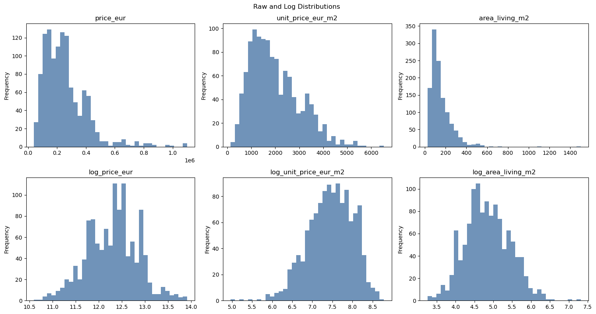
▶ Show code
if HAS_GEOSPATIAL_STACK:for category in [c for c in ["municipality_name", "property_type_std", "typology_bucket_std", "condition_std", "preservation_class_std", "listing_year"] if c in listings_analysis.columns]: keep = listings_analysis[category].value_counts(dropna=False).head(8).index plot_data = listings_analysis[listings_analysis[category].isin(keep)] fig, ax = plt.subplots(figsize=(10, 4)) plot_data.boxplot(column=TARGET_UNIT_PRICE, by=category, ax=ax, rot=35) ax.set_title(f"Unit Price by {category}") ax.set_ylabel(TARGET_UNIT_PRICE) fig.suptitle("") fig.tight_layout() plt.show()else:print("Boxplots skipped.")
Compare total price, unit price, and dwelling size before mapping aggregated prices. A high total price can be a size/composition effect. A high unit price is more consistent with location, quality, amenity, or scarcity effects, but still requires diagnostics. Outlier flags are analytical warnings, not deletion rules.
1.4 2. Spatial Support and the MAUP Challenge
The aggregation hierarchy is:
zones / neighborhoods
parishes / freguesias
municipalities
square grids
hexagonal grids
Zones and parishes are substantive supports. Municipalities are broader administrative supports. Square and hexagonal grids are synthetic supports used to reveal scale and zoning effects.
▶ Show code
if HAS_GEOSPATIAL_STACK:def create_square_grid(study_area_gdf, cell_size_m, prefix): union = study_area_gdf.geometry.union_all() ifhasattr(study_area_gdf.geometry, "union_all") else study_area_gdf.unary_union minx, miny, maxx, maxy = union.bounds cells, ids = [], [] row, y =0, minywhile y < maxy: col, x =0, minxwhile x < maxx: geom = box(x, y, x + cell_size_m, y + cell_size_m)if geom.intersects(union): cells.append(geom.intersection(union)) ids.append(f"{prefix}_{row:03d}_{col:03d}") x += cell_size_m col +=1 y += cell_size_m row +=1return gpd.GeoDataFrame({"support_id": ids, "support_name": ids, "grid_size_m": cell_size_m}, geometry=cells, crs=study_area_gdf.crs)def hexagon(cx, cy, radius):return Polygon([(cx + radius * math.cos(math.radians(60* i)), cy + radius * math.sin(math.radians(60* i))) for i inrange(6)])def create_hex_grid(study_area_gdf, comparable_square_size_m, prefix): union = study_area_gdf.geometry.union_all() ifhasattr(study_area_gdf.geometry, "union_all") else study_area_gdf.unary_union radius = math.sqrt((2* comparable_square_size_m **2) / (3* math.sqrt(3))) width, height =2* radius, math.sqrt(3) * radius minx, miny, maxx, maxy = union.bounds cells, ids = [], [] row, y =0, miny - heightwhile y < maxy + height: col, x =0, minx - width + (0if row %2==0else width *0.75)while x < maxx + width: geom = hexagon(x, y, radius)if geom.intersects(union): cells.append(geom.intersection(union)) ids.append(f"{prefix}_{row:03d}_{col:03d}") x += width *1.5 col +=1 y += height /2 row +=1return gpd.GeoDataFrame({"support_id": ids, "support_name": ids, "grid_size_m": comparable_square_size_m}, geometry=cells, crs=study_area_gdf.crs) zones_support = zones_metric.copy() zones_support["support_id"] = zones_support[ZONE_ID].astype(str) zones_support["support_name"] = zones_support["zone_name"].astype(str) parish_id_col ="DTMNFR21"if"DTMNFR21"in parishes_metric.columns else"freguesia" parishes_support = parishes_metric.copy() parishes_support["support_id"] = parishes_support[parish_id_col].astype(str) parishes_support["support_name"] = parishes_support["freguesia"].astype(str) municipalities_support = zones_metric.dissolve(by="municipality_name", as_index=False) municipalities_support["support_id"] = municipalities_support["municipality_name"].astype(str) municipalities_support["support_name"] = municipalities_support["municipality_name"].astype(str) square_grids = {s: create_square_grid(zones_metric, s, f"square_{s}m") for s in GRID_SIZES_M} hex_grids = {s: create_hex_grid(zones_metric, s, f"hex_{s}m") for s in GRID_SIZES_M} support_layers = [ {"name": "zones_neighborhoods", "rank": 1, "kind": "teaching/submunicipal", "gdf": zones_support}, {"name": "parishes_freguesias", "rank": 2, "kind": "administrative", "gdf": parishes_support}, {"name": "municipalities", "rank": 3, "kind": "administrative", "gdf": municipalities_support}, ] support_layers += [{"name": f"square_grid_{s}m", "rank": 4, "kind": "synthetic_grid", "gdf": g} for s, g in square_grids.items()] support_layers += [{"name": f"hex_grid_{s}m", "rank": 5, "kind": "synthetic_grid", "gdf": g} for s, g in hex_grids.items()] display(as_table([{"support": x["name"], "rank": x["rank"], "kind": x["kind"], "n_polygons": len(x["gdf"]), "crs": str(x["gdf"].crs)} for x in support_layers]))else: support_layers = []print("Support creation skipped.")
if HAS_GEOSPATIAL_STACK:# Build raw diagnostics (kept for downstream compatibility) diagnostics = []for name, gdf in aggregated_supports.items(): used = gdf[gdf["n_listings"] >0] diagnostics.append({"support": name,"n_polygons_or_cells": len(gdf),"total_listings_assigned": int(gdf["n_listings"].sum()),"zero_listing_units": int((gdf["n_listings"] ==0).sum()),"lt_3_listings": int((gdf["n_listings"] <3).sum()),"lt_5_listings": int((gdf["n_listings"] <5).sum()),"lt_10_listings": int((gdf["n_listings"] <10).sum()),"median_of_median_price": used["median_price_eur"].median(),"median_of_median_unit_price": used["median_unit_price_eur_m2"].median(), }) support_diagnostics_df = pd.DataFrame(diagnostics) # preserved for downstream cells# --- Table A: Coverage and Completeness --- completeness_rows = []for d in diagnostics: n_total = d["n_polygons_or_cells"] n_empty = d["zero_listing_units"] n_with = n_total - n_empty completeness_rows.append({"support": d["support"],"n_units": n_total,"n_with_listings": n_with,"n_empty_units": n_empty,"pct_empty": f"{n_empty / n_total *100:.1f}%","total_listings": d["total_listings_assigned"], })print("Table A — Coverage and Completeness")print("How many spatial units have at least one listing assigned?")print("="*65) display(pd.DataFrame(completeness_rows))# --- Table B: Small-n Instability (non-empty units only) ---# lt_X_listings in the raw diagnostics include zero-listing units;# subtract n_empty to report instability only among units that have data. stability_rows = []for d in diagnostics: n_empty = d["zero_listing_units"] n_with = d["n_polygons_or_cells"] - n_empty stability_rows.append({"support": d["support"],"n_with_listings": n_with,"n<3 (unreliable)": max(0, d["lt_3_listings"] - n_empty),"n<5 (fragile)": max(0, d["lt_5_listings"] - n_empty),"n<10 (cautious)": max(0, d["lt_10_listings"] - n_empty),"median_price_eur": round(d["median_of_median_price"], 0),"median_unit_eur_m2": round(d["median_of_median_unit_price"], 0), })print("\nTable B — Small-n Instability (among units with \u22651 listing)")print("n<3 = unreliable | n<5 = fragile | n<10 = interpret with caution")print("="*70) display(pd.DataFrame(stability_rows))# Per-support preview (top 8 by listing count) preview_cols = ["support_id", "support_name", "n_listings","median_price_eur", "median_unit_price_eur_m2","mean_price_eur", "mean_unit_price_eur_m2","median_living_area_m2", "share_nearest_zone_fallback","small_n_lt_3", "small_n_lt_5", "small_n_lt_10", ]print("\nTop 8 units by listing count per support (preview):")for name, gdf in aggregated_supports.items():print(f"\n{name}") display(gdf.sort_values("n_listings", ascending=False)[ [c for c in preview_cols if c in gdf.columns] ].head(8))else:print("Aggregation diagnostics skipped.")
Table A — Coverage and Completeness
How many spatial units have at least one listing assigned?
=================================================================
support
n_units
n_with_listings
n_empty_units
pct_empty
total_listings
0
zones_neighborhoods
131
92
39
29.8%
1184
1
parishes_freguesias
14
14
0
0.0%
1184
2
municipalities
2
2
0
0.0%
1149
3
square_grid_500m
715
265
450
62.9%
1149
4
square_grid_1000m
214
120
94
43.9%
1149
5
hex_grid_500m
715
254
461
64.5%
1149
6
hex_grid_1000m
216
118
98
45.4%
1149
Table B — Small-n Instability (among units with ≥1 listing)
n<3 = unreliable | n<5 = fragile | n<10 = interpret with caution
======================================================================
support
n_with_listings
n<3 (unreliable)
n<5 (fragile)
n<10 (cautious)
median_price_eur
median_unit_eur_m2
0
zones_neighborhoods
92
26
34
56
230000.0
1517.0
1
parishes_freguesias
14
1
1
1
231250.0
1538.0
2
municipalities
2
0
0
0
218750.0
1741.0
3
square_grid_500m
265
157
198
235
231000.0
1474.0
4
square_grid_1000m
120
46
66
81
228125.0
1443.0
5
hex_grid_500m
254
143
186
223
240000.0
1492.0
6
hex_grid_1000m
118
43
64
88
230000.0
1343.0
Top 8 units by listing count per support (preview):
zones_neighborhoods
support_id
support_name
n_listings
median_price_eur
median_unit_price_eur_m2
mean_price_eur
mean_unit_price_eur_m2
median_living_area_m2
share_nearest_zone_fallback
small_n_lt_3
small_n_lt_5
small_n_lt_10
17
17
Pontes
81
240000.0
2801.242236
273289.876543
2859.604247
85.0
0.024691
False
False
False
95
95
Cancela
75
175000.0
1547.619048
200566.400000
1541.519728
111.0
0.000000
False
False
False
22
22
Sá Barrocas
64
202500.0
1922.211698
223312.500000
2279.210385
111.5
0.015625
False
False
False
8
8
Cilhas
48
214500.0
1686.746988
235096.875000
1614.629618
125.0
0.000000
False
False
False
12
12
Forca
46
275000.0
2730.091478
316823.369565
2703.836709
114.5
0.000000
False
False
False
70
70
Largo do Mercado
38
293500.0
2468.750000
337736.842105
2607.341235
117.5
0.000000
False
False
False
3
3
Bairro do Liceu
38
230590.0
2479.239130
303864.736842
2754.190893
99.5
0.000000
False
False
False
10
10
Estação
36
265000.0
2716.180371
268413.194444
2702.148405
98.0
0.000000
False
False
False
parishes_freguesias
support_id
support_name
n_listings
median_price_eur
median_unit_price_eur_m2
mean_price_eur
mean_unit_price_eur_m2
median_living_area_m2
share_nearest_zone_fallback
small_n_lt_3
small_n_lt_5
small_n_lt_10
9
010517
União das freguesias de Glória e Vera Cruz
348
235000.0
2500.000000
272627.500000
2563.883956
100.0
0.017241
False
False
False
2
010505
Esgueira
140
225000.0
1815.492958
234242.678571
2026.585897
101.5
0.114286
False
False
False
11
011006
Gafanha da Nazaré
136
180000.0
1510.844859
244279.301471
1869.998686
114.5
0.022059
False
False
False
13
011008
Ílhavo (São Salvador)
134
195000.0
1408.333333
205486.044776
1487.151979
123.0
0.014925
False
False
False
7
010515
Eixo e Eirol
66
134500.0
1079.545455
176486.742424
1191.037747
127.0
0.000000
False
False
False
0
010501
Aradas
64
238700.0
1580.000000
234231.250000
1684.635989
140.5
0.015625
False
False
False
10
011005
Gafanha da Encarnação
61
400000.0
2692.307692
392770.491803
2723.391263
147.0
0.049180
False
False
False
1
010502
Cacia
56
252500.0
1565.737581
274526.785714
2002.607702
153.0
0.053571
False
False
False
municipalities
support_id
support_name
n_listings
median_price_eur
median_unit_price_eur_m2
mean_price_eur
mean_unit_price_eur_m2
median_living_area_m2
share_nearest_zone_fallback
small_n_lt_3
small_n_lt_5
small_n_lt_10
0
Aveiro
Aveiro
825
235000.0
1911.764706
256180.872727
2043.425485
123.0
0.0
False
False
False
1
Ilhavo
Ilhavo
324
202500.0
1570.723684
254296.651235
1852.959883
125.0
0.0
False
False
False
square_grid_500m
support_id
support_name
n_listings
median_price_eur
median_unit_price_eur_m2
mean_price_eur
mean_unit_price_eur_m2
median_living_area_m2
share_nearest_zone_fallback
small_n_lt_3
small_n_lt_5
small_n_lt_10
554
square_500m_025_019
square_500m_025_019
56
242500.0
2344.827586
243522.767857
2552.501486
98.0
0.0
False
False
False
528
square_500m_024_020
square_500m_024_020
39
275000.0
2660.256410
324627.564103
2606.353676
117.0
0.0
False
False
False
526
square_500m_024_018
square_500m_024_018
39
263000.0
2500.000000
312527.179487
2578.982360
109.0
0.0
False
False
False
553
square_500m_025_018
square_500m_025_018
37
232500.0
2388.535032
242849.459459
2459.629543
103.0
0.0
False
False
False
525
square_500m_024_017
square_500m_024_017
29
240000.0
2603.260870
285134.482759
2835.242931
92.0
0.0
False
False
False
552
square_500m_025_017
square_500m_025_017
27
230000.0
3000.000000
242925.925926
3011.690090
66.0
0.0
False
False
False
555
square_500m_025_020
square_500m_025_020
27
285000.0
3333.333333
298796.296296
3256.813284
83.0
0.0
False
False
False
263
square_500m_016_014
square_500m_016_014
24
196250.0
1300.157519
195562.500000
1369.403481
118.5
0.0
False
False
False
square_grid_1000m
support_id
support_name
n_listings
median_price_eur
median_unit_price_eur_m2
mean_price_eur
mean_unit_price_eur_m2
median_living_area_m2
share_nearest_zone_fallback
small_n_lt_3
small_n_lt_5
small_n_lt_10
160
square_1000m_012_009
square_1000m_012_009
138
246750.0
2414.523670
269160.615942
2567.432958
103.0
0.0
False
False
False
161
square_1000m_012_010
square_1000m_012_010
71
275000.0
3224.137931
309265.845070
2883.898212
101.0
0.0
False
False
False
159
square_1000m_012_008
square_1000m_012_008
58
233000.0
2911.041667
263584.482759
2964.246062
77.5
0.0
False
False
False
85
square_1000m_008_007
square_1000m_008_007
48
198750.0
1656.862745
202131.250000
1562.315054
111.5
0.0
False
False
False
173
square_1000m_013_010
square_1000m_013_010
43
220000.0
1800.000000
230616.279070
1962.224827
112.0
0.0
False
False
False
144
square_1000m_011_009
square_1000m_011_009
37
235000.0
2357.142857
300192.432432
2546.554127
104.0
0.0
False
False
False
156
square_1000m_012_003
square_1000m_012_003
36
177500.0
1614.716403
259433.333333
1966.207848
114.0
0.0
False
False
False
126
square_1000m_010_009
square_1000m_010_009
26
263500.0
1649.375000
249015.384615
1829.565657
126.0
0.0
False
False
False
hex_grid_500m
support_id
support_name
n_listings
median_price_eur
median_unit_price_eur_m2
mean_price_eur
mean_unit_price_eur_m2
median_living_area_m2
share_nearest_zone_fallback
small_n_lt_3
small_n_lt_5
small_n_lt_10
555
hex_500m_050_011
hex_500m_050_011
61
200000.0
2214.285714
225760.245902
2419.583686
100.0
0.0
False
False
False
542
hex_500m_049_011
hex_500m_049_011
38
280000.0
3126.934985
317497.368421
2975.392766
92.5
0.0
False
False
False
512
hex_500m_047_010
hex_500m_047_010
36
261500.0
2421.577061
353919.722222
2518.351112
111.0
0.0
False
False
False
541
hex_500m_049_010
hex_500m_049_010
34
256500.0
2577.140639
263705.294118
2594.696497
106.0
0.0
False
False
False
567
hex_500m_051_012
hex_500m_051_012
27
130000.0
1329.787234
180703.703704
1650.433903
99.0
0.0
False
False
False
522
hex_500m_048_004
hex_500m_048_004
23
165000.0
1721.518987
248765.217391
1983.329175
116.0
0.0
False
False
False
268
hex_500m_033_008
hex_500m_033_008
23
197500.0
1233.766234
200582.608696
1305.597442
141.0
0.0
False
False
False
525
hex_500m_048_010
hex_500m_048_010
22
240000.0
2505.208333
287359.090909
2901.391163
87.0
0.0
False
False
False
hex_grid_1000m
support_id
support_name
n_listings
median_price_eur
median_unit_price_eur_m2
mean_price_eur
mean_unit_price_eur_m2
median_living_area_m2
share_nearest_zone_fallback
small_n_lt_3
small_n_lt_5
small_n_lt_10
164
hex_1000m_026_006
hex_1000m_026_006
133
240000.0
2753.731343
260641.165414
2681.086497
93.00
0.0
False
False
False
155
hex_1000m_025_005
hex_1000m_025_005
120
245000.0
2577.140639
294074.083333
2667.485158
99.00
0.0
False
False
False
172
hex_1000m_027_006
hex_1000m_027_006
44
142000.0
1522.796563
183422.727273
1727.739735
94.00
0.0
False
False
False
75
hex_1000m_017_004
hex_1000m_017_004
43
175000.0
1343.558282
204032.093023
1485.806965
120.00
0.0
False
False
False
153
hex_1000m_025_002
hex_1000m_025_002
40
167500.0
1614.716403
247515.000000
1874.368139
111.50
0.0
False
False
False
129
hex_1000m_022_006
hex_1000m_022_006
36
239200.0
2333.333333
241049.444444
2082.798879
111.50
0.0
False
False
False
147
hex_1000m_024_006
hex_1000m_024_006
32
227950.0
2107.645833
309296.093750
2509.746117
115.50
0.0
False
False
False
85
hex_1000m_018_005
hex_1000m_018_005
30
195000.0
1687.500000
203375.000000
1682.817837
111.25
0.0
False
False
False
1.4.1 Small-n Instability: A Threshold Rubric for Aggregate Statistics
Median prices computed from very few listings are statistically fragile — a single unusual listing can shift the median substantially. Use this rubric when interpreting any aggregate map, Moran statistic, or LISA cluster label:
n listings in unit
Reliability
Recommended handling
< 3
Unreliable — median may equal one observation
Suppress from choropleth maps; exclude from Moran calculations
3 – 4
Fragile — highly sensitive to any one listing
Interpret only if the pattern is consistent across multiple spatial supports
5 – 9
Cautious — useful signal but potentially unstable
Cross-check property type and dwelling-size composition
≥ 10
Acceptable — treat as a provisional market estimate
Standard caveats about listing-market data still apply
Note: These thresholds apply to aggregated supports (zones, parishes, grids) where the statistic is computed from multiple listings. At the individual listing level, prices are directly observed and this sample-size fragility does not apply.
The n<5 (fragile) column in Table B and the red outlines on maps highlight units that fall below the cautious threshold. Any high-price or low-price finding for these units should be treated as provisional.
▶ Show code
if HAS_GEOSPATIAL_STACK:for variable in ["median_price_eur", "median_unit_price_eur_m2"]: values = pd.concat([g.loc[g["n_listings"] >0, variable] for g in aggregated_supports.values()]).dropna() vmin, vmax = values.quantile([0.05, 0.95]) ifnot values.empty else (None, None) ncols =2 nrows = math.ceil(len(aggregated_supports) / ncols) fig, axes = plt.subplots(nrows, ncols, figsize=(14, 5.2* nrows)) axes = np.atleast_1d(axes).ravel()for ax, (name, gdf) inzip(axes, aggregated_supports.items()): gdf.boundary.plot(ax=ax, color="0.75", linewidth=0.25) gdf[gdf["n_listings"] >0].plot(ax=ax, column=variable, cmap="viridis", legend=True, vmin=vmin, vmax=vmax) gdf[(gdf["n_listings"] >0) & (gdf["small_n_lt_5"])].boundary.plot(ax=ax, color="red", linewidth=0.8) ax.set_title(f"{name}\n{variable}; red outline = n < 5") ax.set_axis_off()for ax in axes[len(aggregated_supports):]: ax.set_visible(False) fig.suptitle(f"MAUP Comparison: {variable} with Shared 5th-95th Percentile Scale") fig.tight_layout() plt.show()else:print("Support maps skipped.")
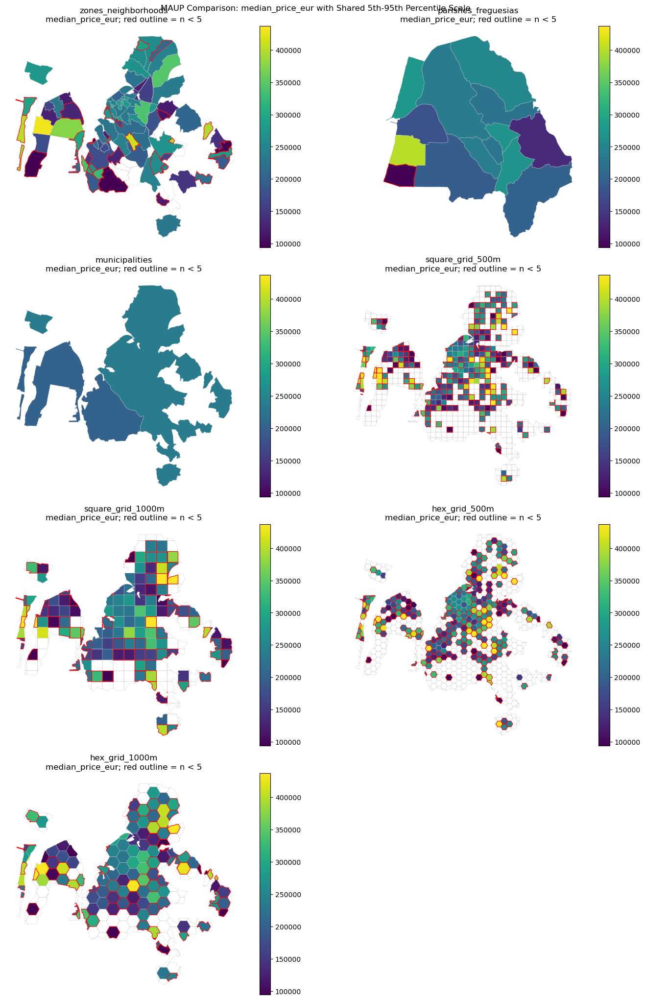
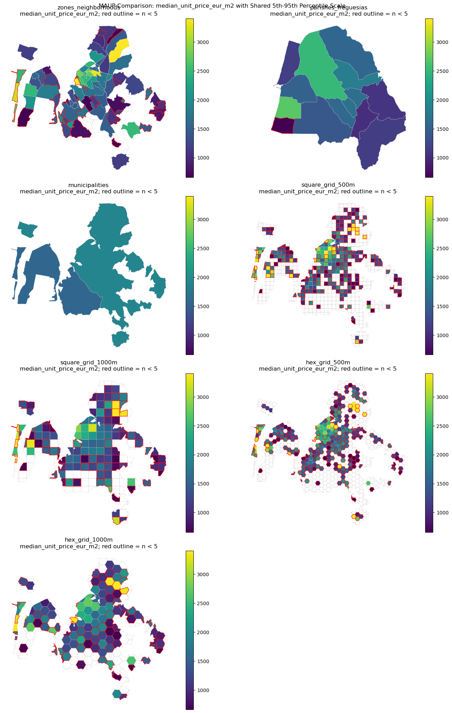
▶ Show code
if HAS_GEOSPATIAL_STACK: records = []for name, gdf in aggregated_supports.items(): used = gdf[gdf["n_listings"] >0]for variable in ["median_price_eur", "median_unit_price_eur_m2", "median_living_area_m2"]:for value in used[variable].dropna(): records.append({"support": name, "variable": variable, "value": value}) distribution_df = pd.DataFrame(records)for variable in ["median_price_eur", "median_unit_price_eur_m2", "median_living_area_m2"]: fig, ax = plt.subplots(figsize=(11, 4.5)) distribution_df[distribution_df["variable"] == variable].boxplot(column="value", by="support", ax=ax, rot=35) ax.set_title(f"Distribution of {variable} Across Spatial Supports") ax.set_xlabel("Spatial support") ax.set_ylabel(variable) fig.suptitle("") fig.tight_layout() plt.show()else:print("Aggregated distribution plots skipped.")
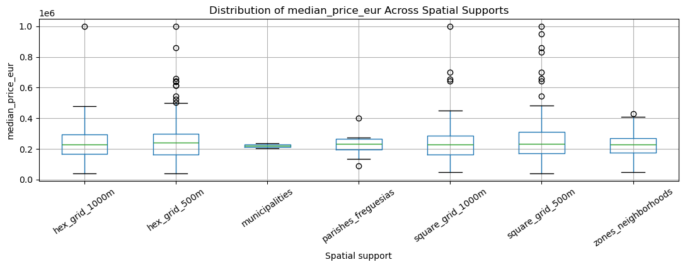
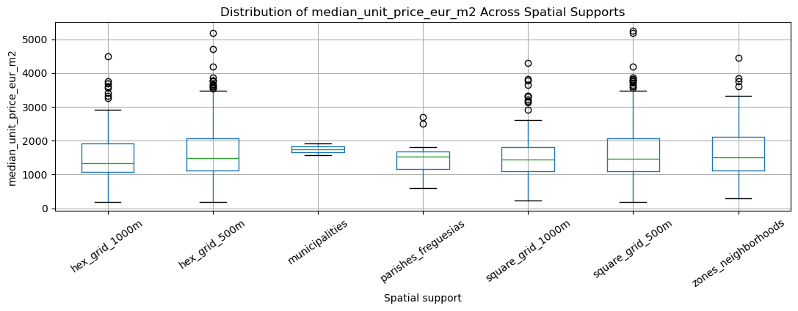
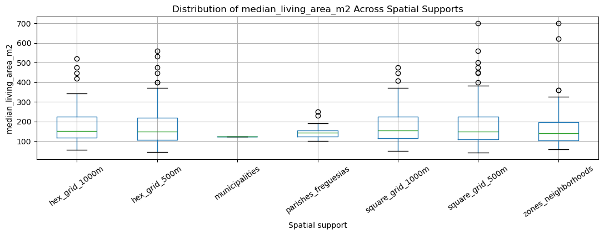
1.4.2 Comparing Across Spatial Supports: A Framework for MAUP Analysis
The maps above show the same variable — median log unit price — at five different spatial resolutions. Before interpreting any single map, compare them systematically.
Structured comparison checklist:
Question
What to look for
What it means if they disagree
Do all supports agree on where prices are high?
Identify the top-3 high-price areas in each map
If a cluster disappears at parish level, it may be a small zone within a heterogeneous parish — aggregation smoothed it out
Do red outlines (n < 5) overlap with high-price areas?
Look for small-n flags on apparently expensive units
Likely data scarcity, not a real price premium
Do substantive supports (zones, parishes) agree with synthetic grids?
Compare zone/parish clusters with 500 m and 1 km grids
If grids differ, the result depends on the boundary definition (MAUP artefact)
Is the pattern stable across grid resolutions (500 m vs 1 km)?
Compare the two grid maps
If the cluster vanishes at 1 km, it has a small spatial footprint — sensitive to resolution
Common MAUP patterns in housing data:
Cluster shrinks at coarser support → Small distinct neighbourhood within a heterogeneous larger zone; aggregation erases within-zone variation.
Cluster only at finest grid → Very small spatial footprint; could be a single development or data artefact.
Cluster stable across all supports → Strong locational premium robust to boundary choices — the most reliable signal.
Different areas appear “expensive” under different supports → Strong MAUP effect; no support is canonical.
Action: Before Section 4, identify 2–3 areas consistently high-price across supports and 1–2 that appear under only one support. These drive your robustness analysis.
1.4.3 Section 2 Interpretation Template
For each support, compare where total prices are high, where unit prices are high, whether the pattern survives a change of support, and whether mapped values are based on enough listings. Empty polygons are not low-price polygons; they have no observed listings. Small-n supports should be outlined and interpreted as unstable.
1.4.4 Why Are Some Suburban Zones or Parishes Apparently Expensive?
High apparent prices in suburban zones or parishes are not automatic data errors. Diagnose larger dwellings, housing-type composition, preservation/condition, coastal or lagoon amenities, small-n instability, boundary heterogeneity, listing-market selection, fallback assignment, temporal composition, and total price versus unit price.
▶ Show code
if HAS_GEOSPATIAL_STACK:def top_share_columns(gdf, prefix, n=3): cols = [c for c in gdf.columns if c.startswith(f"share_{prefix}_")]return gdf[cols].mean(numeric_only=True).sort_values(ascending=False).head(n).index.tolist() if cols else [] outputs = []for support_name in ["zones_neighborhoods", "parishes_freguesias"]: gdf = aggregated_supports[support_name] stable = gdf[gdf["n_listings"] >= MIN_LISTINGS]if stable.empty:continue threshold = stable["median_price_eur"].quantile(0.80) candidates = stable[stable["median_price_eur"] >= threshold] cols = ["support", "support_id", "support_name", "n_listings", "median_price_eur", "mean_price_eur","median_unit_price_eur_m2", "mean_unit_price_eur_m2", "median_living_area_m2","iqr_price_eur", "iqr_unit_price_eur_m2", "share_nearest_zone_fallback","small_n_lt_3", "small_n_lt_5", "small_n_lt_10", ]for prefix in ["property_type", "typology", "condition", "preservation"]: cols += top_share_columns(gdf, prefix) outputs.append(candidates[[c for c in cols if c in candidates.columns]].sort_values("median_price_eur", ascending=False).head(10))if outputs: high_price_diagnostics = pd.concat(outputs, ignore_index=True) display(high_price_diagnostics)else:print("High-price support diagnostics skipped.")
support
support_id
support_name
n_listings
median_price_eur
mean_price_eur
median_unit_price_eur_m2
mean_unit_price_eur_m2
median_living_area_m2
iqr_price_eur
...
share_property_type_house
share_property_type_apartment
share_typology_t4
share_typology_t3
share_typology_t2
share_condition_used
share_condition_new
share_preservation_new
share_preservation_used_11_25
share_preservation_used_26plus
0
zones_neighborhoods
49
Junta de Freguesia da Gafanha da Encarnação
28
430000.0
400946.428571
2464.285714
2518.742088
185.0
184750.0
...
0.678571
0.321429
0.107143
0.571429
0.214286
0.285714
0.714286
0.714286
0.107143
0.035714
1
zones_neighborhoods
40
Avenida do Mar
25
400000.0
408500.000000
3174.603175
2999.717042
142.0
190500.0
...
0.320000
0.680000
0.160000
0.280000
0.400000
0.320000
0.680000
0.680000
0.120000
0.160000
2
zones_neighborhoods
124
Nossa Sra dos Campos
7
375000.0
345714.285714
1815.384615
1881.787401
272.0
160000.0
...
0.857143
0.142857
0.571429
0.142857
0.000000
0.428571
0.571429
0.571429
0.142857
0.285714
3
zones_neighborhoods
97
Quinta do Loureiro
24
345000.0
352145.833333
3606.548699
3001.450597
114.0
198750.0
...
0.333333
0.666667
0.208333
0.208333
0.250000
0.833333
0.166667
0.166667
0.166667
0.000000
4
zones_neighborhoods
14
Griné
23
340000.0
345434.782609
1746.724891
1828.536127
225.0
237500.0
...
0.739130
0.260870
0.347826
0.260870
0.217391
0.434783
0.565217
0.565217
0.260870
0.130435
5
zones_neighborhoods
4
Baixa de Sto. António
6
300000.0
375858.333333
2744.416527
2740.106787
138.0
204612.5
...
0.500000
0.500000
0.166667
0.000000
0.000000
0.000000
1.000000
1.000000
0.000000
0.000000
6
zones_neighborhoods
50
Gafanha D'Áquem
4
297500.0
295000.000000
1320.680253
1340.454765
238.0
75000.0
...
1.000000
0.000000
0.750000
0.000000
0.000000
0.500000
0.500000
0.500000
0.000000
0.250000
7
zones_neighborhoods
70
Largo do Mercado
38
293500.0
337736.842105
2468.750000
2607.341235
117.5
157500.0
...
0.131579
0.868421
0.078947
0.342105
0.526316
0.500000
0.500000
0.500000
0.289474
0.131579
8
zones_neighborhoods
13
Glicinias
12
290000.0
300408.333333
2596.875000
2409.798795
132.5
135750.0
...
0.000000
1.000000
0.083333
0.416667
0.416667
0.500000
0.500000
0.500000
0.333333
0.000000
9
zones_neighborhoods
6
Centro Congressos
16
282000.0
375250.000000
2457.627119
2672.773780
102.5
191250.0
...
0.125000
0.875000
0.250000
0.187500
0.375000
0.125000
0.875000
0.875000
0.000000
0.125000
10
parishes_freguesias
011005
Gafanha da Encarnação
61
400000.0
392770.491803
2692.307692
2723.391263
147.0
200500.0
...
0.508197
0.491803
0.131148
0.426230
0.311475
0.295082
0.704918
0.704918
0.114754
0.081967
11
parishes_freguesias
010511
São Jacinto
15
275000.0
228133.333333
1170.212766
1087.595521
230.0
105000.0
...
0.866667
0.133333
0.066667
0.666667
0.133333
0.400000
0.600000
0.600000
0.133333
0.200000
12
parishes_freguesias
010508
Oliveirinha
32
270000.0
278953.125000
1020.347806
1151.549930
250.0
121250.0
...
0.781250
0.218750
0.656250
0.187500
0.062500
0.406250
0.593750
0.593750
0.218750
0.062500
13
parishes_freguesias
010513
Santa Joana
50
270000.0
297698.000000
1648.622982
1719.412268
141.0
238750.0
...
0.580000
0.420000
0.320000
0.340000
0.240000
0.620000
0.380000
0.380000
0.360000
0.200000
14 rows × 25 columns
1.4.5 Section 2 Caution
Parish aggregation is substantively meaningful because parishes are administrative geographies, but parish medians are not inherently more correct than zone or grid medians. A robust interpretation should not depend on a single support, a single classification, or a single minimum-count threshold.
1.5 3. Original Zones, Parishes, and the Construction of Spatial Weights W
A spatial weights matrix W encodes a modelling claim about which spatial units are connected. It is not given by nature. In this lab, contiguity weights represent shared borders, centroid k-nearest-neighbour weights represent proximity among support centroids, distance-band weights represent a fixed interaction radius, and the optional network weights represent travel-topology proximity.
For Aveiro/Ilhavo housing data, each W has a different substantive meaning and a different failure mode. Contiguity can create islands, kNN can force implausible links, distance bands depend on a chosen threshold, and network weights depend on OSM coverage, bridges, road hierarchy, and centroid snapping.
# Conceptual meanings and pitfalls for each required W familyw_concepts = [ {"W family": "Queen contiguity","Conceptual meaning": "Neighbouring supports are connected if they touch at an edge or vertex.","Aveiro/Ilhavo pitfalls": "Can connect units through tiny corner contacts; waterways, bridges, and barriers are ignored; islands may appear.", }, {"W family": "Rook contiguity","Conceptual meaning": "Neighbouring supports are connected only if they share a border segment.","Aveiro/Ilhavo pitfalls": "More conservative than Queen; may produce more islands or disconnected components in coastal or fragmented supports.", }, {"W family": "Centroid kNN","Conceptual meaning": "Each support is connected to its k closest centroid neighbours.","Aveiro/Ilhavo pitfalls": "Forces every unit to have neighbours even when geography or access makes those links implausible; centroid locations can misrepresent irregular polygons.", }, {"W family": "Distance band","Conceptual meaning": "Supports are connected when their centroids fall within a chosen metric threshold.","Aveiro/Ilhavo pitfalls": "The threshold can drive results; Euclidean distance ignores canals, lagoon geography, bridges, and road topology.", }, {"W family": "Network distance","Conceptual meaning": "Supports are connected by road-network travel distance rather than straight-line distance.","Aveiro/Ilhavo pitfalls": "Depends on OSM completeness, centroid snapping, network type, road hierarchy, bridges, and the chosen distance threshold.", },]show(as_table(w_concepts))
W family Conceptual meaning \
0 Queen contiguity Neighbouring supports are connected if they to...
1 Rook contiguity Neighbouring supports are connected only if th...
2 Centroid kNN Each support is connected to its k closest cen...
3 Distance band Supports are connected when their centroids fa...
4 Network distance Supports are connected by road-network travel ...
Aveiro/Ilhavo pitfalls
0 Can connect units through tiny corner contacts...
1 More conservative than Queen; may produce more...
2 Forces every unit to have neighbours even when...
3 The threshold can drive results; Euclidean dis...
4 Depends on OSM completeness, centroid snapping...
W family
Conceptual meaning
Aveiro/Ilhavo pitfalls
0
Queen contiguity
Neighbouring supports are connected if they to...
Can connect units through tiny corner contacts...
1
Rook contiguity
Neighbouring supports are connected only if th...
More conservative than Queen; may produce more...
2
Centroid kNN
Each support is connected to its k closest cen...
Forces every unit to have neighbours even when...
3
Distance band
Supports are connected when their centroids fa...
The threshold can drive results; Euclidean dis...
4
Network distance
Supports are connected by road-network travel ...
Depends on OSM completeness, centroid snapping...
▶ Show code
# Spatial weights helpersif HAS_GEOSPATIAL_STACK and HAS_LIBPYSAL:import libpysalfrom libpysal import weightsfrom libpysal.weights.spatial_lag import lag_spatialdef support_for_weights(support_name):if support_name notin aggregated_supports:raiseKeyError(f"{support_name} has not been aggregated yet.") gdf = aggregated_supports[support_name].copy() gdf = gdf[gdf.geometry.notna()].copy() gdf["support_id"] = gdf["support_id"].astype(str)return gdfdef connected_components_from_w(w): ids =list(w.id_order) seen =set() components = []for start in ids:if start in seen:continue stack = [start] component = [] seen.add(start)while stack: node = stack.pop() component.append(node) neighbours =set(w.neighbors.get(node, [])) reverse_neighbours = {other for other in ids if node in w.neighbors.get(other, [])}for neighbour in neighbours | reverse_neighbours:if neighbour notin seen: seen.add(neighbour) stack.append(neighbour) components.append(component)return componentsdef is_neighbor_symmetric(w):for i, neighbours in w.neighbors.items():for j in neighbours:if i notin w.neighbors.get(j, []):returnFalsereturnTruedef is_weight_symmetric(w, tol=1e-12): weight_lookup = {}for i, neighbours in w.neighbors.items():for j, wij inzip(neighbours, w.weights[i]): weight_lookup[(i, j)] = wijfor (i, j), wij in weight_lookup.items():if (j, i) notin weight_lookup:returnFalseifabs(wij - weight_lookup[(j, i)]) > tol:returnFalsereturnTruedef cardinality_summary(w): vals = pd.Series(w.cardinalities, name="cardinality").astype(int)return {"min": int(vals.min()) iflen(vals) elseNone,"q25": float(vals.quantile(0.25)) iflen(vals) elseNone,"median": float(vals.median()) iflen(vals) elseNone,"mean": float(vals.mean()) iflen(vals) elseNone,"q75": float(vals.quantile(0.75)) iflen(vals) elseNone,"max": int(vals.max()) iflen(vals) elseNone, }def set_row_standardized(w):iflen(w.islands) >0: warnings.warn(f"{len(w.islands)} islands detected before row standardisation. Island rows remain zero.") w.transform ="R"return wdef diagnose_w(name, w, support_name, w_family, conceptual_meaning, pitfalls, gdf): components = connected_components_from_w(w) card = cardinality_summary(w)return {"W": name,"support": support_name,"family": w_family,"n": w.n,"nonzero_links": int(sum(w.cardinalities.values())),"islands": list(w.islands),"n_islands": len(w.islands),"n_components": len(components),"largest_component_size": max(len(c) for c in components) if components else0,"symmetric_neighbour_graph": is_neighbor_symmetric(w),"symmetric_weights": is_weight_symmetric(w),"row_standardized": str(w.transform).upper() =="R","cardinality_min": card["min"],"cardinality_q25": card["q25"],"cardinality_median": card["median"],"cardinality_mean": card["mean"],"cardinality_q75": card["q75"],"cardinality_max": card["max"],"conceptual_meaning": conceptual_meaning,"pitfalls": pitfalls, }def centroid_coordinates(gdf): pts = gdf.geometry.representative_point()returnlist(zip(pts.x, pts.y))def minimum_distance_threshold(gdf): coords = np.asarray(centroid_coordinates(gdf), dtype=float)iflen(coords) <2:returnNone diff = coords[:, None, :] - coords[None, :, :] dist = np.sqrt((diff **2).sum(axis=2)) dist[dist ==0] = np.nan nearest = np.nanmin(dist, axis=1)returnfloat(np.nanmax(nearest) *1.001)def make_queen_w(gdf):return weights.Queen.from_dataframe(gdf, ids=gdf["support_id"].tolist())def make_rook_w(gdf):return weights.Rook.from_dataframe(gdf, ids=gdf["support_id"].tolist())def make_knn_w(gdf, k=DEFAULT_KNN_K): k =min(k, max(len(gdf) -1, 1))return weights.KNN.from_dataframe(gdf, k=k, ids=gdf["support_id"].tolist())def make_distance_band_w(gdf): threshold = minimum_distance_threshold(gdf)if threshold isNone:returnNone, None w = weights.DistanceBand.from_dataframe( gdf, threshold=threshold, binary=True, silence_warnings=True, ids=gdf["support_id"].tolist(), )return w, thresholddef plot_w_graph(w, gdf, title): id_to_point =dict(zip(gdf["support_id"], gdf.geometry.representative_point())) fig, ax = plt.subplots(figsize=(7, 7)) gdf.boundary.plot(ax=ax, color="0.80", linewidth=0.4)for i, neighbours in w.neighbors.items():if i notin id_to_point:continue pi = id_to_point[i]for j in neighbours:if j notin id_to_point:continue pj = id_to_point[j] ax.plot([pi.x, pj.x], [pi.y, pj.y], color="#4c78a8", linewidth=0.35, alpha=0.35) gdf.geometry.representative_point().plot(ax=ax, color="#d62728", markersize=8) ax.set_title(title) ax.set_axis_off() plt.show()else:print("Spatial weights helpers skipped because GeoPandas/Pandas/Matplotlib or libpysal are not installed.")
1.5.1 Row-Standardisation: What It Does and Why It Matters
Spatial weights are constructed in two steps:
Step 1 — Binary connectivity graph:W[i,j] = 1 if units i and j are neighbours (share a border, are within distance d, or are the k nearest); otherwise W[i,j] = 0.
Step 2 — Row-standardisation: Each row is divided by its row sum so that all neighbours’ weights sum to 1 for each unit.
Before standardisation
After standardisation
Weight formula
W[i,j] = 1 for all neighbours
W[i,j] = 1 / cardinality(i)
Unit with 10 neighbours
Each gets weight 1
Each gets weight 0.10
Unit with 2 neighbours
Each gets weight 1
Each gets weight 0.50
Spatial lag interpretation
Weighted sum of neighbours
Weighted average of neighbours
Three consequences that matter for inference:
Spatial lags are comparable across supports. After standardisation, lag(y)[i] is the average price in i’s neighbourhood regardless of how many neighbours i has. Without standardisation, units with more neighbours produce larger spatial lags.
W becomes asymmetric after standardisation. Even when the neighbour graph is symmetric (if i is j’s neighbour, j is i’s neighbour), the weights are not: W[i,j] = 1/card(i) but W[j,i] = 1/card(j). These differ whenever card(i) ≠ card(j). This asymmetry has implications for test statistics but is standard in applied practice.
Islands receive a zero row. A unit with no neighbours has a row sum of zero — division is undefined. Islands are retained as zero-weight rows; their spatial lag is zero and they do not contribute to Moran’s I. The set_row_standardized() helper warns when islands are present.
Rule: Always row-standardise before computing spatial lags, Moran’s I, or LISA. The set_row_standardized() call in the helpers above ensures this. Forgetting to standardise makes Moran’s I sensitive to cardinality heterogeneity, not just spatial pattern.
▶ Show code
# Build required W objectsw_registry = {}w_diagnostics = []distance_thresholds = {}if HAS_GEOSPATIAL_STACK and HAS_LIBPYSAL and aggregated_supports: w_specs = [ {"support_name": "zones_neighborhoods","label": "zone","families": ["queen", "rook", "knn", "distance_band"], }, {"support_name": "parishes_freguesias","label": "parish","families": ["queen", "rook", "knn", "distance_band"], }, ] family_metadata = {"queen": {"family": "Queen contiguity","concept": "Shared edge or vertex among polygon supports.","pitfalls": "Corner-only contacts may overstate neighbourhood relations; barriers and road topology are ignored.", },"rook": {"family": "Rook contiguity","concept": "Shared border segment among polygon supports.","pitfalls": "More conservative than Queen and can create islands in fragmented supports.", },"knn": {"family": "Centroid kNN","concept": f"Each support is connected to its {DEFAULT_KNN_K} nearest representative-point neighbours.","pitfalls": "Forces neighbours even across water, canals, or weakly related housing submarkets.", },"distance_band": {"family": "Distance band","concept": "Centroid/representative-point neighbours within the minimum threshold needed to avoid islands.","pitfalls": "Threshold choice can drive results; Euclidean distance ignores network access and lagoon geography.", }, }for spec in w_specs: support_name = spec["support_name"]if support_name notin aggregated_supports:continue gdf = support_for_weights(support_name)iflen(gdf) <2: warnings.warn(f"Skipping W for {support_name}: fewer than two geometries.")continuefor family in spec["families"]: name =f"{spec['label']}_{family}"try:if family =="queen": w = make_queen_w(gdf)elif family =="rook": w = make_rook_w(gdf)elif family =="knn": w = make_knn_w(gdf)elif family =="distance_band": w, threshold = make_distance_band_w(gdf) distance_thresholds[name] = thresholdif w isNone:continueelse:continue w = set_row_standardized(w) meta = family_metadata[family] w_registry[name] = {"w": w,"support": support_name,"gdf": gdf,"family": meta["family"],"conceptual_meaning": meta["concept"],"pitfalls": meta["pitfalls"], } w_diagnostics.append( diagnose_w(name, w, support_name, meta["family"], meta["concept"], meta["pitfalls"], gdf) )exceptExceptionas exc: warnings.warn(f"Could not build {name}: {exc}") w_diagnostics_df = pd.DataFrame(w_diagnostics) show(w_diagnostics_df)if distance_thresholds:print("Distance-band thresholds in metres:")for name, threshold in distance_thresholds.items():print(f" {name}: {threshold:,.1f}")else:print("W construction skipped. Requires completed Section 2 aggregations and libpysal.")
('WARNING: ', '21', ' is an island (no neighbors)')
('WARNING: ', '126', ' is an island (no neighbors)')
('WARNING: ', '129', ' is an island (no neighbors)')
('WARNING: ', '21', ' is an island (no neighbors)')
('WARNING: ', '126', ' is an island (no neighbors)')
('WARNING: ', '129', ' is an island (no neighbors)')
W support family n \
0 zone_queen zones_neighborhoods Queen contiguity 131
1 zone_rook zones_neighborhoods Rook contiguity 131
2 zone_knn zones_neighborhoods Centroid kNN 131
3 zone_distance_band zones_neighborhoods Distance band 131
4 parish_queen parishes_freguesias Queen contiguity 14
5 parish_rook parishes_freguesias Rook contiguity 14
6 parish_knn parishes_freguesias Centroid kNN 14
7 parish_distance_band parishes_freguesias Distance band 14
nonzero_links islands n_islands n_components \
0 826 [21, 126, 129] 3 8
1 808 [21, 126, 129] 3 8
2 786 [] 0 1
3 2572 [] 0 1
4 56 [] 0 1
5 56 [] 0 1
6 84 [] 0 1
7 26 [010511, 010517] 2 4
largest_component_size symmetric_neighbour_graph symmetric_weights \
0 97 True False
1 97 True False
2 131 False False
3 131 True False
4 14 True False
5 14 True False
6 14 False False
7 9 True False
row_standardized cardinality_min cardinality_q25 cardinality_median \
0 True 0 3.00 5.0
1 True 0 3.00 5.0
2 True 6 6.00 6.0
3 True 2 8.00 19.0
4 True 2 2.25 4.0
5 True 2 2.25 4.0
6 True 6 6.00 6.0
7 True 0 1.00 1.0
cardinality_mean cardinality_q75 cardinality_max \
0 6.305344 8.00 16
1 6.167939 8.00 15
2 6.000000 6.00 6
3 19.633588 28.00 44
4 4.000000 4.75 8
5 4.000000 4.75 8
6 6.000000 6.00 6
7 1.857143 2.75 5
conceptual_meaning \
0 Shared edge or vertex among polygon supports.
1 Shared border segment among polygon supports.
2 Each support is connected to its 6 nearest rep...
3 Centroid/representative-point neighbours withi...
4 Shared edge or vertex among polygon supports.
5 Shared border segment among polygon supports.
6 Each support is connected to its 6 nearest rep...
7 Centroid/representative-point neighbours withi...
pitfalls
0 Corner-only contacts may overstate neighbourho...
1 More conservative than Queen and can create is...
2 Forces neighbours even across water, canals, o...
3 Threshold choice can drive results; Euclidean ...
4 Corner-only contacts may overstate neighbourho...
5 More conservative than Queen and can create is...
6 Forces neighbours even across water, canals, o...
7 Threshold choice can drive results; Euclidean ...
Distance-band thresholds in metres:
zone_distance_band: 3,186.6
parish_distance_band: 4,125.9
▶ Show code
# Cardinality distributions for each Wif HAS_GEOSPATIAL_STACK and HAS_LIBPYSAL and w_registry: cardinality_records = []for name, record in w_registry.items(): w = record["w"]for support_id, cardinality in w.cardinalities.items(): cardinality_records.append({"W": name, "support_id": support_id, "cardinality": cardinality}) cardinality_df = pd.DataFrame(cardinality_records) show(cardinality_df.groupby("W")["cardinality"].describe())# Individual histograms per W ncols =2 nrows = math.ceil(len(w_registry) / ncols) fig, axes = plt.subplots(nrows, ncols, figsize=(12, 3.8* nrows)) axes = np.atleast_1d(axes).ravel()for ax, (name, record) inzip(axes, w_registry.items()): vals = pd.Series(record["w"].cardinalities) vals.plot(kind="hist", bins=range(int(vals.min()), int(vals.max()) +2), ax=ax, color="#4c78a8", alpha=0.85) ax.set_title(name) ax.set_xlabel("Number of neighbours")for ax in axes[len(w_registry):]: ax.set_visible(False) fig.suptitle("Spatial Weights Cardinality Distributions") fig.tight_layout() plt.show()# Summary bar chart: mean ± 1 std cardinality per W definition w_names =list(w_registry.keys()) means = [pd.Series(w_registry[n]["w"].cardinalities).mean() for n in w_names] stds = [pd.Series(w_registry[n]["w"].cardinalities).std() for n in w_names] fig2, ax2 = plt.subplots(figsize=(max(6, len(w_names) *1.3), 4)) ax2.bar(range(len(w_names)), means, yerr=stds, capsize=5, color="#4c78a8", alpha=0.85, error_kw={"ecolor": "#d62728", "lw": 2}) ax2.set_xticks(range(len(w_names))) ax2.set_xticklabels(w_names, rotation=45, ha="right") ax2.set_ylabel("Mean neighbours (\u00b1 1 std)") ax2.set_title("W Comparison: Mean Cardinality per W Definition\n""Contiguity W have variable cardinality; kNN W are fixed by construction") ax2.grid(axis="y", alpha=0.4) fig2.tight_layout() plt.show()else:print("Cardinality plots skipped.")
# Optional neighbour graph maps for the most important W definitionsif HAS_GEOSPATIAL_STACK and HAS_LIBPYSAL and w_registry:for name in ["zone_queen", "zone_rook", "zone_knn", "zone_distance_band", "parish_queen", "parish_knn"]:if name in w_registry: plot_w_graph(w_registry[name]["w"], w_registry[name]["gdf"], f"Neighbour Graph: {name}")else:print("Neighbour graph maps skipped.")
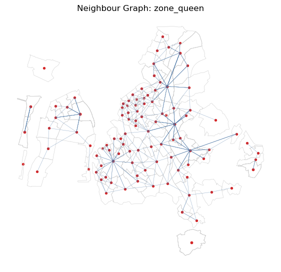
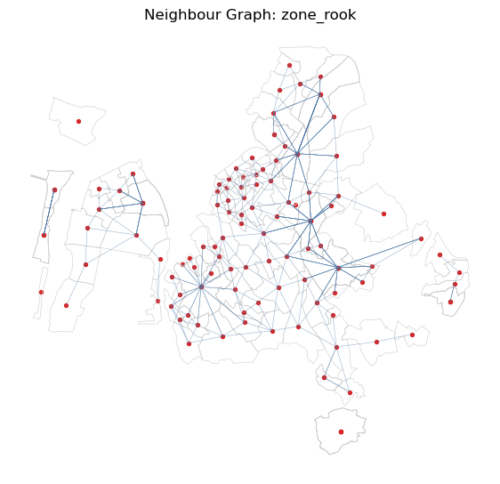
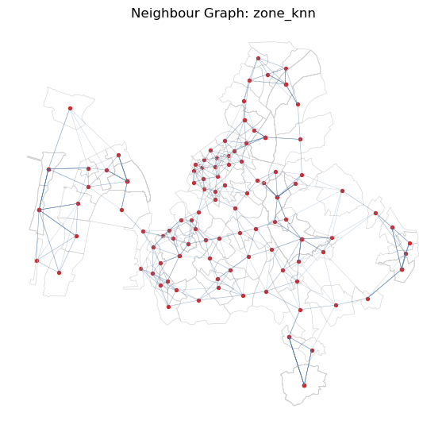
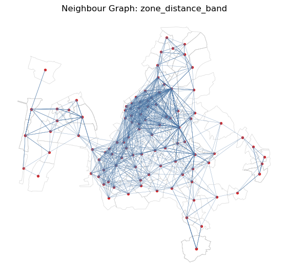
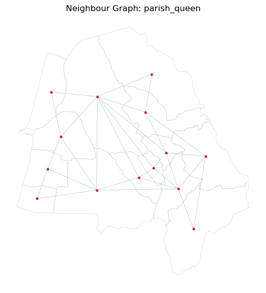
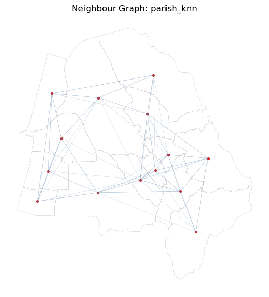
▶ Show code
# Optional network W with graceful fallbacknetwork_w_note =Noneifnot (HAS_GEOSPATIAL_STACK and HAS_LIBPYSAL): network_w_note ="Network W skipped because GeoPandas and libpysal are required."elifnot (HAS_NETWORKX and HAS_OSMNX): network_w_note ="Network W skipped because networkx and osmnx are not installed."elifnot CACHED_NETWORK_PATH.exists() andnot RUN_NETWORK_DOWNLOAD: network_w_note = (f"Network W skipped because no cached graph was found at {CACHED_NETWORK_PATH}. ""Set RUN_NETWORK_DOWNLOAD=True to attempt an OSMnx download, or provide the cached GraphML file." )else:try:import networkx as nximport osmnx as ox base_record = w_registry.get("zone_distance_band") or w_registry.get("zone_knn")if base_record isNone:raiseRuntimeError("A zone support is required before building network W.") zones_for_network = base_record["gdf"].copy() zones_wgs84 = zones_for_network.to_crs(GEOGRAPHIC_CRS) study_polygon = zones_wgs84.geometry.union_all() ifhasattr(zones_wgs84.geometry, "union_all") else zones_wgs84.unary_unionif CACHED_NETWORK_PATH.exists(): graph = ox.load_graphml(CACHED_NETWORK_PATH)elif RUN_NETWORK_DOWNLOAD: graph = ox.graph_from_polygon(study_polygon, network_type="drive", simplify=True) graph = ox.project_graph(graph, to_crs=PROJECTED_CRS)else: graph =Noneif graph isNone:raiseRuntimeError("No network graph available.") graph_crs = graph.graph.get("crs")ifstr(graph_crs).upper() notin [PROJECTED_CRS.upper(), "EPSG:3763"]: graph = ox.project_graph(graph, to_crs=PROJECTED_CRS) centroids = zones_for_network.geometry.representative_point() nearest_nodes = ox.distance.nearest_nodes(graph, centroids.x.to_numpy(), centroids.y.to_numpy()) lengths =dict(nx.all_pairs_dijkstra_path_length(graph, weight="length", cutoff=5000)) support_ids = zones_for_network["support_id"].tolist() neighbours = {sid: [] for sid in support_ids}for sid_i, node_i inzip(support_ids, nearest_nodes): reachable = lengths.get(node_i, {})for sid_j, node_j inzip(support_ids, nearest_nodes):if sid_i == sid_j:continueif reachable.get(node_j, float("inf")) <=2500: neighbours[sid_i].append(sid_j) network_w = weights.W(neighbours) network_w = set_row_standardized(network_w) name ="zone_network_2500m" concept ="Zones connected when representative points are within 2,500 m over the drivable road network." pitfalls ="Depends on OSM coverage, centroid snapping, road hierarchy, bridges, and the selected threshold." w_registry[name] = {"w": network_w,"support": "zones_neighborhoods","gdf": zones_for_network,"family": "Network distance","conceptual_meaning": concept,"pitfalls": pitfalls, } w_diagnostics.append(diagnose_w(name, network_w, "zones_neighborhoods", "Network distance", concept, pitfalls, zones_for_network)) network_w_note ="Network W built successfully."exceptExceptionas exc: network_w_note =f"Network W skipped after graceful failure: {exc}"print(network_w_note)if w_diagnostics: w_diagnostics_df = pd.DataFrame(w_diagnostics)
Network W built successfully.
1.5.2 Section 3 Interpretation and Caution
The diagnostics above should be read before any Moran statistic. Islands and disconnected components mean some supports have no neighbours under a particular definition of W. kNN usually removes islands, but it does so by forcing links that may not be substantively meaningful. Row-standardisation changes the interpretation of weights from raw links to neighbour averages, and can make weighted matrices asymmetric even when the neighbour graph is symmetric.
1.6 4. Global and Local Spatial Autocorrelation Under Alternative W
Global Moran’s I asks whether similar values tend to be near similar values under a chosen W. Local Moran/LISA identifies local clusters and spatial outliers. These are exploratory diagnostics, not causal tests. Results should be compared across zones and parishes, contiguity and centroid proximity, and raw versus log-transformed median prices.
▶ Show code
# Moran helper functionsif HAS_GEOSPATIAL_STACK and HAS_LIBPYSAL and HAS_ESDA and w_registry:import esdadef subset_w(w, keep_ids): keep = [str(i) for i in keep_ids] keep_set =set(keep) neighbours = {} subset_weights = {}for i in keep: original_neighbours = w.neighbors.get(i, []) original_weights = w.weights.get(i, []) kept_neighbours = [] kept_weights = []for j, wij inzip(original_neighbours, original_weights):if j in keep_set: kept_neighbours.append(j) kept_weights.append(wij) neighbours[i] = kept_neighbours subset_weights[i] = kept_weights out = weights.W(neighbours, subset_weights, id_order=keep) out.transform ="R"return outdef analytical_gdf_for_w(record): gdf = record["gdf"].copy()for var in ["median_price_eur", "median_unit_price_eur_m2"]: log_var ="log_"+ var gdf[log_var] = np.where(gdf[var] >0, np.log(gdf[var]), np.nan) gdf["support_id"] = gdf["support_id"].astype(str)return gdf MORAN_VARIABLES = ["median_price_eur","median_unit_price_eur_m2","log_median_price_eur","log_median_unit_price_eur_m2", ]else:print("Moran helpers skipped. Requires GeoPandas, libpysal, esda, and W objects.")
1.6.1 Interpreting Moran’s I: Magnitude, Sign, and W-Sensitivity
What Moran’s I measures: Global Moran’s I tests whether similar values cluster in space beyond what spatial randomness would produce.
I > E[I] (where E[I] ≈ −1/(n−1) ≈ 0): positive spatial autocorrelation — similar values cluster near each other
I ≈ E[I]: no detectable spatial pattern
I < E[I]: negative spatial autocorrelation — dissimilar values are near each other (unusual in housing data)
Magnitude interpretation (typical ranges in housing-market data):
Moran’s I
Pattern strength
> 0.50
Strong — spatial pattern is dominant
0.25 – 0.50
Moderate — notable but not overwhelming
0.10 – 0.25
Weak — present but modest
< 0.10
Negligible — may be statistically significant but practically small
Important: Moran’s I magnitude depends on the variable’s variance, the number of supports, and the W definition. A value of 0.30 under kNN W is not directly comparable to 0.30 under Queen contiguity. Always compare I values across W within the same support.
W-sensitivity rule: If Moran’s I is significant (p < 0.05) under Queen, kNN, and distance-band W → the finding is robust. If significant under only one W → report it as a sensitivity result, not a conclusion.
('WARNING: ', '43', ' is an island (no neighbors)')
('WARNING: ', '55', ' is an island (no neighbors)')
('WARNING: ', '64', ' is an island (no neighbors)')
('WARNING: ', '77', ' is an island (no neighbors)')
('WARNING: ', '129', ' is an island (no neighbors)')
('WARNING: ', '43', ' is an island (no neighbors)')
('WARNING: ', '55', ' is an island (no neighbors)')
('WARNING: ', '64', ' is an island (no neighbors)')
('WARNING: ', '77', ' is an island (no neighbors)')
('WARNING: ', '129', ' is an island (no neighbors)')
('WARNING: ', '43', ' is an island (no neighbors)')
('WARNING: ', '55', ' is an island (no neighbors)')
('WARNING: ', '64', ' is an island (no neighbors)')
('WARNING: ', '77', ' is an island (no neighbors)')
('WARNING: ', '129', ' is an island (no neighbors)')
('WARNING: ', '43', ' is an island (no neighbors)')
('WARNING: ', '55', ' is an island (no neighbors)')
('WARNING: ', '64', ' is an island (no neighbors)')
('WARNING: ', '77', ' is an island (no neighbors)')
('WARNING: ', '129', ' is an island (no neighbors)')
('WARNING: ', '43', ' is an island (no neighbors)')
('WARNING: ', '55', ' is an island (no neighbors)')
('WARNING: ', '64', ' is an island (no neighbors)')
('WARNING: ', '77', ' is an island (no neighbors)')
('WARNING: ', '129', ' is an island (no neighbors)')
('WARNING: ', '43', ' is an island (no neighbors)')
('WARNING: ', '55', ' is an island (no neighbors)')
('WARNING: ', '64', ' is an island (no neighbors)')
('WARNING: ', '77', ' is an island (no neighbors)')
('WARNING: ', '129', ' is an island (no neighbors)')
('WARNING: ', '43', ' is an island (no neighbors)')
('WARNING: ', '55', ' is an island (no neighbors)')
('WARNING: ', '64', ' is an island (no neighbors)')
('WARNING: ', '77', ' is an island (no neighbors)')
('WARNING: ', '129', ' is an island (no neighbors)')
('WARNING: ', '43', ' is an island (no neighbors)')
('WARNING: ', '55', ' is an island (no neighbors)')
('WARNING: ', '64', ' is an island (no neighbors)')
('WARNING: ', '77', ' is an island (no neighbors)')
('WARNING: ', '129', ' is an island (no neighbors)')
('WARNING: ', '55', ' is an island (no neighbors)')
('WARNING: ', '64', ' is an island (no neighbors)')
('WARNING: ', '65', ' is an island (no neighbors)')
('WARNING: ', '55', ' is an island (no neighbors)')
('WARNING: ', '64', ' is an island (no neighbors)')
('WARNING: ', '65', ' is an island (no neighbors)')
('WARNING: ', '55', ' is an island (no neighbors)')
('WARNING: ', '64', ' is an island (no neighbors)')
('WARNING: ', '65', ' is an island (no neighbors)')
('WARNING: ', '55', ' is an island (no neighbors)')
('WARNING: ', '64', ' is an island (no neighbors)')
('WARNING: ', '65', ' is an island (no neighbors)')
('WARNING: ', '64', ' is an island (no neighbors)')
('WARNING: ', '64', ' is an island (no neighbors)')
('WARNING: ', '64', ' is an island (no neighbors)')
('WARNING: ', '64', ' is an island (no neighbors)')
('WARNING: ', '010511', ' is an island (no neighbors)')
('WARNING: ', '010517', ' is an island (no neighbors)')
('WARNING: ', '010511', ' is an island (no neighbors)')
('WARNING: ', '010517', ' is an island (no neighbors)')
('WARNING: ', '010511', ' is an island (no neighbors)')
('WARNING: ', '010517', ' is an island (no neighbors)')
('WARNING: ', '010511', ' is an island (no neighbors)')
('WARNING: ', '010517', ' is an island (no neighbors)')
('WARNING: ', '41', ' is an island (no neighbors)')
('WARNING: ', '43', ' is an island (no neighbors)')
('WARNING: ', '64', ' is an island (no neighbors)')
('WARNING: ', '65', ' is an island (no neighbors)')
('WARNING: ', '78', ' is an island (no neighbors)')
('WARNING: ', '41', ' is an island (no neighbors)')
('WARNING: ', '43', ' is an island (no neighbors)')
('WARNING: ', '64', ' is an island (no neighbors)')
('WARNING: ', '65', ' is an island (no neighbors)')
('WARNING: ', '78', ' is an island (no neighbors)')
('WARNING: ', '41', ' is an island (no neighbors)')
('WARNING: ', '43', ' is an island (no neighbors)')
('WARNING: ', '64', ' is an island (no neighbors)')
('WARNING: ', '65', ' is an island (no neighbors)')
('WARNING: ', '78', ' is an island (no neighbors)')
('WARNING: ', '41', ' is an island (no neighbors)')
('WARNING: ', '43', ' is an island (no neighbors)')
('WARNING: ', '64', ' is an island (no neighbors)')
('WARNING: ', '65', ' is an island (no neighbors)')
('WARNING: ', '78', ' is an island (no neighbors)')
W support variable \
30 parish_distance_band parishes_freguesias log_median_price_eur
26 parish_knn parishes_freguesias log_median_price_eur
18 parish_queen parishes_freguesias log_median_price_eur
22 parish_rook parishes_freguesias log_median_price_eur
31 parish_distance_band parishes_freguesias log_median_unit_price_eur_m2
27 parish_knn parishes_freguesias log_median_unit_price_eur_m2
19 parish_queen parishes_freguesias log_median_unit_price_eur_m2
23 parish_rook parishes_freguesias log_median_unit_price_eur_m2
28 parish_distance_band parishes_freguesias median_price_eur
24 parish_knn parishes_freguesias median_price_eur
16 parish_queen parishes_freguesias median_price_eur
20 parish_rook parishes_freguesias median_price_eur
29 parish_distance_band parishes_freguesias median_unit_price_eur_m2
25 parish_knn parishes_freguesias median_unit_price_eur_m2
17 parish_queen parishes_freguesias median_unit_price_eur_m2
21 parish_rook parishes_freguesias median_unit_price_eur_m2
14 zone_distance_band zones_neighborhoods log_median_price_eur
10 zone_knn zones_neighborhoods log_median_price_eur
34 zone_network_2500m zones_neighborhoods log_median_price_eur
2 zone_queen zones_neighborhoods log_median_price_eur
6 zone_rook zones_neighborhoods log_median_price_eur
15 zone_distance_band zones_neighborhoods log_median_unit_price_eur_m2
11 zone_knn zones_neighborhoods log_median_unit_price_eur_m2
35 zone_network_2500m zones_neighborhoods log_median_unit_price_eur_m2
3 zone_queen zones_neighborhoods log_median_unit_price_eur_m2
7 zone_rook zones_neighborhoods log_median_unit_price_eur_m2
12 zone_distance_band zones_neighborhoods median_price_eur
8 zone_knn zones_neighborhoods median_price_eur
32 zone_network_2500m zones_neighborhoods median_price_eur
0 zone_queen zones_neighborhoods median_price_eur
4 zone_rook zones_neighborhoods median_price_eur
13 zone_distance_band zones_neighborhoods median_unit_price_eur_m2
9 zone_knn zones_neighborhoods median_unit_price_eur_m2
33 zone_network_2500m zones_neighborhoods median_unit_price_eur_m2
1 zone_queen zones_neighborhoods median_unit_price_eur_m2
5 zone_rook zones_neighborhoods median_unit_price_eur_m2
n Moran_I expected_I p_sim z_sim note
30 13 -0.601009 -0.083333 0.042 -1.900973
26 13 -0.108565 -0.083333 0.446 -0.271623
18 13 -0.262720 -0.083333 0.146 -1.131161
22 13 -0.262720 -0.083333 0.144 -1.125710
31 13 0.309930 -0.083333 0.075 1.378097
27 13 0.023999 -0.083333 0.141 1.020065
19 13 0.095566 -0.083333 0.141 1.112054
23 13 0.095566 -0.083333 0.142 1.112794
28 13 -0.618217 -0.083333 0.040 -2.035167
24 13 -0.102986 -0.083333 0.458 -0.250295
16 13 -0.276354 -0.083333 0.103 -1.364444
20 13 -0.276354 -0.083333 0.080 -1.425643
29 13 0.172710 -0.083333 0.152 0.875132
25 13 0.004698 -0.083333 0.191 0.876918
17 13 0.000350 -0.083333 0.309 0.471670
21 13 0.000350 -0.083333 0.272 0.541200
14 66 0.028223 -0.015385 0.235 0.690300
10 66 0.250151 -0.015385 0.002 2.709702
34 66 0.122840 -0.015385 0.074 1.546591
2 66 0.225923 -0.015385 0.005 2.512272
6 66 0.231181 -0.015385 0.006 2.487132
15 66 0.272471 -0.015385 0.001 4.653984
11 66 0.545456 -0.015385 0.001 5.888353
35 66 0.231201 -0.015385 0.004 2.899759
3 66 0.477707 -0.015385 0.001 4.837757
7 66 0.481298 -0.015385 0.001 5.061963
12 66 0.021743 -0.015385 0.238 0.642803
8 66 0.233117 -0.015385 0.005 2.680681
32 66 0.142558 -0.015385 0.039 1.787907
0 66 0.210074 -0.015385 0.016 2.293630
4 66 0.213122 -0.015385 0.014 2.334313
13 66 0.230040 -0.015385 0.001 4.137085
9 66 0.530612 -0.015385 0.001 5.681393
33 66 0.255518 -0.015385 0.002 3.374252
1 66 0.486415 -0.015385 0.001 5.109565
5 66 0.489651 -0.015385 0.001 4.815475
Pivoted Moran's I — quick W-to-W comparison
*** p<0.01 | ** p<0.05 | * p<0.10 | (ns) not significant
Rows = (support × variable) | Columns = W matrix definition
support variable parish_distance_band \
0 parishes_freguesias log_median_price_eur -0.601**
1 parishes_freguesias log_median_unit_price_eur_m2 0.310*
2 parishes_freguesias median_price_eur -0.618**
3 parishes_freguesias median_unit_price_eur_m2 0.173(ns)
4 zones_neighborhoods log_median_price_eur NaN
5 zones_neighborhoods log_median_unit_price_eur_m2 NaN
6 zones_neighborhoods median_price_eur NaN
7 zones_neighborhoods median_unit_price_eur_m2 NaN
parish_knn parish_queen parish_rook zone_distance_band zone_knn \
0 -0.109(ns) -0.263(ns) -0.263(ns) NaN NaN
1 0.024(ns) 0.096(ns) 0.096(ns) NaN NaN
2 -0.103(ns) -0.276(ns) -0.276* NaN NaN
3 0.005(ns) 0.000(ns) 0.000(ns) NaN NaN
4 NaN NaN NaN 0.028(ns) 0.250***
5 NaN NaN NaN 0.272*** 0.545***
6 NaN NaN NaN 0.022(ns) 0.233***
7 NaN NaN NaN 0.230*** 0.531***
zone_network_2500m zone_queen zone_rook
0 NaN NaN NaN
1 NaN NaN NaN
2 NaN NaN NaN
3 NaN NaN NaN
4 0.123* 0.226*** 0.231***
5 0.231*** 0.478*** 0.481***
6 0.143** 0.210** 0.213**
7 0.256*** 0.486*** 0.490***
▶ Show code
# Moran scatterplots for selected W definitions and median unit priceif HAS_GEOSPATIAL_STACK and HAS_LIBPYSAL and HAS_ESDA and w_registry: selected_w = [ name for name in ["zone_queen", "zone_knn", "zone_distance_band","parish_queen", "parish_knn", "parish_distance_band", ]if name in w_registry ] ncols =2 nrows = math.ceil(len(selected_w) / ncols) if selected_w else1 fig, axes = plt.subplots(nrows, ncols, figsize=(12, 4.5* nrows)) axes = np.atleast_1d(axes).ravel()for ax, w_name inzip(axes, selected_w): record = w_registry[w_name] gdf = analytical_gdf_for_w(record) variable ="log_median_unit_price_eur_m2" valid = gdf[(gdf["n_listings"] >= MIN_LISTINGS) & gdf[variable].notna()].copy()iflen(valid) <5: ax.set_title(f"{w_name}: too few valid supports") ax.set_axis_off()continue w_sub = subset_w(record["w"], valid["support_id"].tolist()) y = valid.set_index("support_id").loc[w_sub.id_order, variable].to_numpy() y_std = (y - y.mean()) / y.std(ddof=0) lag_y = lag_spatial(w_sub, y_std) ax.scatter(y_std, lag_y, alpha=0.70, color="#4c78a8") slope = np.polyfit(y_std, lag_y, 1)[0] iflen(y_std) >1else np.nan xs = np.linspace(y_std.min(), y_std.max(), 50) ax.plot(xs, slope * xs, color="#d62728", linewidth=1.5) ax.axhline(0, color="0.5", linewidth=0.8) ax.axvline(0, color="0.5", linewidth=0.8)# Quadrant labels in axes-fraction coordinates (0=left/bottom, 1=right/top)for _lbl, (_tx, _ty), _ha, _va, _col in [ ("HH", (0.97, 0.97), "right", "top", "#d7191c"), ("LL", (0.03, 0.03), "left", "bottom", "#2c7bb6"), ("HL", (0.97, 0.03), "right", "bottom", "#fdae61"), ("LH", (0.03, 0.97), "left", "top", "#abd9e9"), ]: ax.text(_tx, _ty, _lbl, transform=ax.transAxes, fontsize=9, fontweight="bold", color=_col, ha=_ha, va=_va, bbox=dict(boxstyle="round,pad=0.2", facecolor="white", alpha=0.75, edgecolor=_col, linewidth=1)) ax.set_title(f"{w_name}\nMoran scatter: {variable}") ax.set_xlabel("Standardised value") ax.set_ylabel("Spatial lag")for ax in axes[len(selected_w):]: ax.set_visible(False) fig.tight_layout() plt.show()else:print("Moran scatterplots skipped.")
('WARNING: ', '43', ' is an island (no neighbors)')
('WARNING: ', '55', ' is an island (no neighbors)')
('WARNING: ', '64', ' is an island (no neighbors)')
('WARNING: ', '77', ' is an island (no neighbors)')
('WARNING: ', '129', ' is an island (no neighbors)')
('WARNING: ', '55', ' is an island (no neighbors)')
('WARNING: ', '64', ' is an island (no neighbors)')
('WARNING: ', '65', ' is an island (no neighbors)')
('WARNING: ', '64', ' is an island (no neighbors)')
('WARNING: ', '010511', ' is an island (no neighbors)')
('WARNING: ', '010517', ' is an island (no neighbors)')
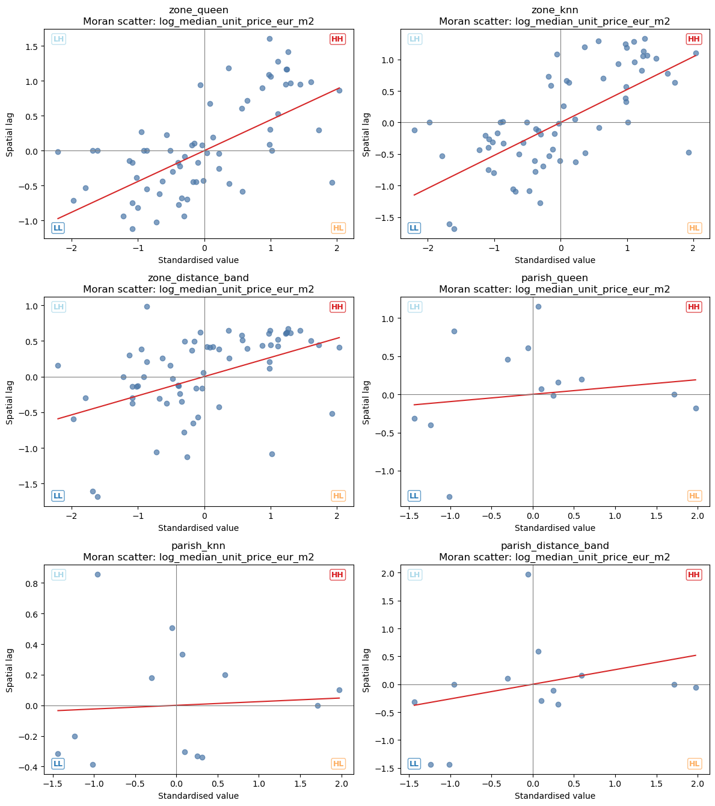
▶ Show code
# Local Moran / LISA cluster summarieslisa_results = {}lisa_summary_records = []if HAS_GEOSPATIAL_STACK and HAS_LIBPYSAL and HAS_ESDA and w_registry: variable ="log_median_unit_price_eur_m2" quadrant_names = {1: "HH", 2: "LH", 3: "LL", 4: "HL"}for w_name, record in w_registry.items(): gdf = analytical_gdf_for_w(record) valid = gdf[(gdf["n_listings"] >= MIN_LISTINGS) & gdf[variable].notna()].copy()iflen(valid) <5:continue w_sub = subset_w(record["w"], valid["support_id"].tolist()) y = valid.set_index("support_id").loc[w_sub.id_order, variable].to_numpy()try: lisa = esda.Moran_Local(y, w_sub, permutations=N_PERMUTATIONS)exceptExceptionas exc: warnings.warn(f"LISA failed for {w_name}: {exc}")continue result = valid.set_index("support_id").loc[w_sub.id_order].copy() result["local_I"] = lisa.Is result["p_sim"] = lisa.p_sim result["quadrant"] = lisa.q result["cluster"] = [ quadrant_names.get(q, "Other") if p <0.05else"Not significant"for q, p inzip(result["quadrant"], result["p_sim"]) ] lisa_results[w_name] = {"gdf": result.reset_index(), "support": record["support"], "variable": variable} counts = result["cluster"].value_counts().to_dict() lisa_summary_records.append({"W": w_name,"support": record["support"],"variable": variable,"n": len(result),"HH": counts.get("HH", 0),"LL": counts.get("LL", 0),"HL": counts.get("HL", 0),"LH": counts.get("LH", 0),"not_significant": counts.get("Not significant", 0), }) lisa_summary_df = pd.DataFrame(lisa_summary_records) show(lisa_summary_df)else: lisa_summary_df =Noneprint("Local Moran/LISA skipped.")
('WARNING: ', '43', ' is an island (no neighbors)')
('WARNING: ', '55', ' is an island (no neighbors)')
('WARNING: ', '64', ' is an island (no neighbors)')
('WARNING: ', '77', ' is an island (no neighbors)')
('WARNING: ', '129', ' is an island (no neighbors)')
('WARNING: ', '43', ' is an island (no neighbors)')
('WARNING: ', '55', ' is an island (no neighbors)')
('WARNING: ', '64', ' is an island (no neighbors)')
('WARNING: ', '77', ' is an island (no neighbors)')
('WARNING: ', '129', ' is an island (no neighbors)')
('WARNING: ', '55', ' is an island (no neighbors)')
('WARNING: ', '64', ' is an island (no neighbors)')
('WARNING: ', '65', ' is an island (no neighbors)')
('WARNING: ', '64', ' is an island (no neighbors)')
('WARNING: ', '010511', ' is an island (no neighbors)')
('WARNING: ', '010517', ' is an island (no neighbors)')
('WARNING: ', '41', ' is an island (no neighbors)')
('WARNING: ', '43', ' is an island (no neighbors)')
('WARNING: ', '64', ' is an island (no neighbors)')
('WARNING: ', '65', ' is an island (no neighbors)')
('WARNING: ', '78', ' is an island (no neighbors)')
W support variable \
0 zone_queen zones_neighborhoods log_median_unit_price_eur_m2
1 zone_rook zones_neighborhoods log_median_unit_price_eur_m2
2 zone_knn zones_neighborhoods log_median_unit_price_eur_m2
3 zone_distance_band zones_neighborhoods log_median_unit_price_eur_m2
4 parish_queen parishes_freguesias log_median_unit_price_eur_m2
5 parish_rook parishes_freguesias log_median_unit_price_eur_m2
6 parish_knn parishes_freguesias log_median_unit_price_eur_m2
7 parish_distance_band parishes_freguesias log_median_unit_price_eur_m2
8 zone_network_2500m zones_neighborhoods log_median_unit_price_eur_m2
n HH LL HL LH not_significant
0 66 13 6 1 1 45
1 66 12 4 1 1 48
2 66 17 3 1 2 43
3 66 21 4 0 5 36
4 13 1 1 0 0 11
5 13 0 1 0 0 12
6 13 0 0 0 1 12
7 13 0 1 1 1 10
8 66 18 6 0 4 38
1.6.2 LISA Cluster Maps: Labels and Multiple-Testing Caution
Cluster and outlier types:
Label
Meaning
HH — High-High
High-price support surrounded by high-price supports → spatial price cluster
LL — Low-Low
Low-price support surrounded by low-price supports → spatial price cluster
HL — High-Low
High-price support surrounded by low-price supports → spatial outlier (isolated high)
LH — Low-High
Low-price support surrounded by high-price supports → spatial outlier (isolated low)
Not significant
No statistically distinguishable pattern at p < 0.05
Multiple-testing caution: LISA runs one permutation test per spatial unit. With 100 zones at p = 0.05, approximately 5 false positives are expected under the null of no autocorrelation. Permutation p-values (used here, 999 permutations) are more conservative than analytical ones, but no Bonferroni or FDR correction is applied. Treat LISA maps as exploratory, not confirmatory.
Stability rule: Trust only cluster labels that appear consistently across Queen, kNN, and distance-band W (see the robustness matrix in the next cell). A label that appears under one W only is unreliable.
▶ Show code
# LISA maps for selected zone and parish W definitionsif HAS_GEOSPATIAL_STACK and HAS_LIBPYSAL and HAS_ESDA and lisa_results: selected_lisa = [ name for name in ["zone_queen", "zone_knn", "zone_distance_band","parish_queen", "parish_knn", "parish_distance_band", ]if name in lisa_results ] colors = {"HH": "#d7191c","LL": "#2c7bb6","HL": "#fdae61","LH": "#abd9e9","Not significant": "#e0e0e0", } ncols =2 nrows = math.ceil(len(selected_lisa) / ncols) if selected_lisa else1 fig, axes = plt.subplots(nrows, ncols, figsize=(13, 5.4* nrows)) axes = np.atleast_1d(axes).ravel()for ax, w_name inzip(axes, selected_lisa): gdf = lisa_results[w_name]["gdf"].copy() gdf["color"] = gdf["cluster"].map(colors).fillna("#ffffff") gdf.plot(ax=ax, color=gdf["color"], edgecolor="white", linewidth=0.25) gdf.boundary.plot(ax=ax, color="0.6", linewidth=0.2) ax.set_title(f"LISA clusters: {w_name}\n"f"{lisa_results[w_name]['variable']}, p < 0.05" ) ax.set_axis_off()for ax in axes[len(selected_lisa):]: ax.set_visible(False)# Shared figure-level legendfrom matplotlib.patches import Patch legend_elements = [ Patch(facecolor="#d7191c", label="HH — High-High (spatial cluster)"), Patch(facecolor="#2c7bb6", label="LL — Low-Low (spatial cluster)"), Patch(facecolor="#fdae61", label="HL — High-Low (spatial outlier)"), Patch(facecolor="#abd9e9", label="LH — Low-High (spatial outlier)"), Patch(facecolor="#e0e0e0", edgecolor="0.5", label="Not significant"), ] fig.legend(handles=legend_elements, loc="lower center", ncol=3, frameon=True, bbox_to_anchor=(0.5, 0.01), fontsize=10, title="LISA cluster / outlier type") fig.tight_layout() fig.subplots_adjust(bottom=0.12) plt.show()else:print("LISA maps skipped.")
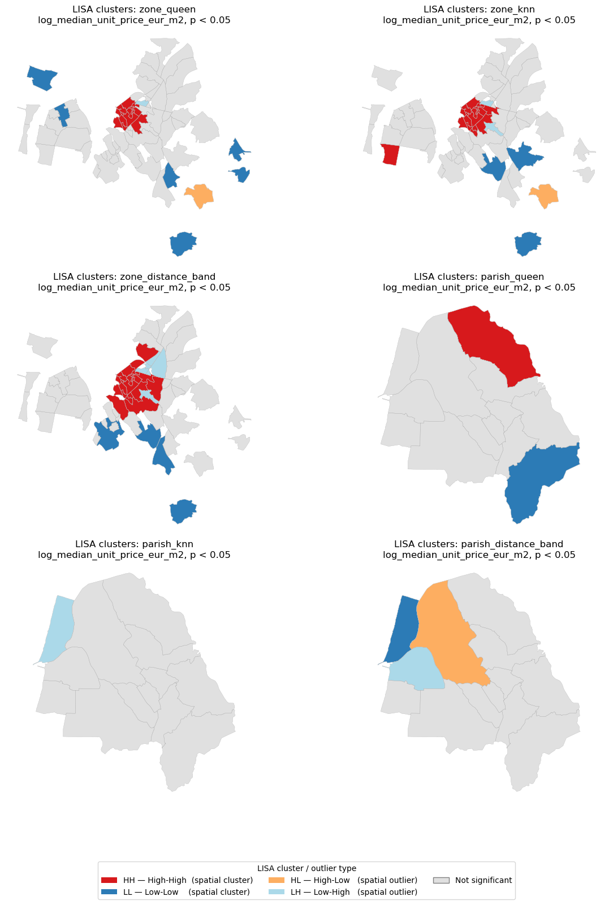
▶ Show code
# Robustness matrix: cluster label by support and Wif HAS_GEOSPATIAL_STACK and HAS_LIBPYSAL and HAS_ESDA and lisa_results: matrix_parts = []for w_name, result in lisa_results.items(): part = result["gdf"][["support_id", "cluster"]].copy() part = part.rename(columns={"cluster": w_name}) matrix_parts.append(part) robustness_matrix = matrix_parts[0]for part in matrix_parts[1:]: robustness_matrix = robustness_matrix.merge(part, on="support_id", how="outer")# Add consistency metrics w_cols = [c for c in robustness_matrix.columns if c !="support_id"] robustness_matrix["dominant_cluster"] = robustness_matrix[w_cols].apply(lambda row: row.value_counts().idxmax() if row.notna().any() else"Not sig", axis=1 ) robustness_matrix["n_consistent_W"] = robustness_matrix[w_cols].apply(lambda row: int(row.value_counts().max()) if row.notna().any() else0, axis=1 ) majority_threshold =max(3, len(w_cols) //2+1) robustness_matrix["stable"] = robustness_matrix["n_consistent_W"] >= majority_threshold col_order = ["support_id", "dominant_cluster", "n_consistent_W", "stable"] + w_colsprint("LISA Robustness Matrix — cluster assignment across W definitions")print(f"n_consistent_W: how many of {len(w_cols)} W matrices agree on the dominant cluster")print(f"stable = True when n_consistent_W ≥ {majority_threshold} "f"(majority of {len(w_cols)} W definitions)")print("="*80) show(robustness_matrix[[c for c in col_order if c in robustness_matrix.columns]]) unstable = robustness_matrix[~robustness_matrix["stable"]]ifnot unstable.empty:print(f"\n{len(unstable)} zone(s) with W-dependent cluster assignments ""(interpret with caution):") show(unstable[["support_id", "dominant_cluster", "n_consistent_W"] + w_cols])else:print(f"\nAll zones have stable cluster assignments "f"(n_consistent_W ≥ {majority_threshold}).")else: robustness_matrix =Noneprint("LISA robustness matrix skipped.")
LISA Robustness Matrix — cluster assignment across W definitions
n_consistent_W: how many of 9 W matrices agree on the dominant cluster
stable = True when n_consistent_W ≥ 5 (majority of 9 W definitions)
================================================================================
support_id dominant_cluster n_consistent_W stable zone_queen \
0 0 Not significant 3 False Not significant
1 010501 Not significant 4 False NaN
2 010502 Not significant 3 False NaN
3 010505 Not significant 4 False NaN
4 010508 Not significant 4 False NaN
.. ... ... ... ... ...
74 90 Not significant 4 False Not significant
75 95 Not significant 4 False Not significant
76 97 Not significant 5 True Not significant
77 98 Not significant 5 True Not significant
78 99 Not significant 5 True Not significant
zone_rook zone_knn zone_distance_band parish_queen \
0 Not significant Not significant HH NaN
1 NaN NaN NaN Not significant
2 NaN NaN NaN HH
3 NaN NaN NaN Not significant
4 NaN NaN NaN Not significant
.. ... ... ... ...
74 Not significant Not significant HH NaN
75 Not significant Not significant LL NaN
76 Not significant Not significant Not significant NaN
77 Not significant Not significant Not significant NaN
78 Not significant Not significant Not significant NaN
parish_rook parish_knn parish_distance_band zone_network_2500m
0 NaN NaN NaN HH
1 Not significant Not significant Not significant NaN
2 Not significant Not significant Not significant NaN
3 Not significant Not significant Not significant NaN
4 Not significant Not significant Not significant NaN
.. ... ... ... ...
74 NaN NaN NaN Not significant
75 NaN NaN NaN Not significant
76 NaN NaN NaN Not significant
77 NaN NaN NaN Not significant
78 NaN NaN NaN Not significant
[79 rows x 13 columns]
41 zone(s) with W-dependent cluster assignments (interpret with caution):
support_id dominant_cluster n_consistent_W zone_queen \
0 0 Not significant 3 Not significant
1 010501 Not significant 4 NaN
2 010502 Not significant 3 NaN
3 010505 Not significant 4 NaN
4 010508 Not significant 4 NaN
5 010510 Not significant 4 NaN
6 010511 Not significant 2 NaN
7 010513 Not significant 4 NaN
8 010515 Not significant 4 NaN
9 010516 LL 2 NaN
10 010517 Not significant 3 NaN
11 011005 Not significant 4 NaN
12 011006 Not significant 3 NaN
13 011008 Not significant 4 NaN
17 106 Not significant 4 Not significant
18 11 HH 3 Not significant
21 116 Not significant 4 Not significant
23 118 Not significant 4 Not significant
25 120 Not significant 4 Not significant
28 129 LL 2 LL
29 13 HH 3 Not significant
30 14 Not significant 3 Not significant
33 18 Not significant 4 Not significant
34 19 Not significant 4 Not significant
35 2 Not significant 3 Not significant
36 20 HH 4 HH
42 27 Not significant 4 LL
48 41 Not significant 3 LL
50 43 LL 3 LL
52 46 Not significant 4 Not significant
54 5 HH 3 Not significant
56 55 HL 3 HL
57 56 Not significant 4 Not significant
61 65 Not significant 3 Not significant
66 73 Not significant 3 Not significant
67 74 Not significant 4 Not significant
68 77 Not significant 3 LL
69 78 Not significant 4 Not significant
70 8 Not significant 4 Not significant
74 90 Not significant 4 Not significant
75 95 Not significant 4 Not significant
zone_rook zone_knn zone_distance_band parish_queen \
0 Not significant Not significant HH NaN
1 NaN NaN NaN Not significant
2 NaN NaN NaN HH
3 NaN NaN NaN Not significant
4 NaN NaN NaN Not significant
5 NaN NaN NaN Not significant
6 NaN NaN NaN Not significant
7 NaN NaN NaN Not significant
8 NaN NaN NaN Not significant
9 NaN NaN NaN LL
10 NaN NaN NaN Not significant
11 NaN NaN NaN Not significant
12 NaN NaN NaN Not significant
13 NaN NaN NaN Not significant
17 Not significant Not significant Not significant NaN
18 Not significant HH HH NaN
21 Not significant Not significant Not significant NaN
23 Not significant HH Not significant NaN
25 Not significant Not significant Not significant NaN
28 LL Not significant Not significant NaN
29 Not significant HH HH NaN
30 Not significant Not significant HH NaN
33 Not significant Not significant LH NaN
34 Not significant Not significant LH NaN
35 Not significant LH LH NaN
36 Not significant HH HH NaN
42 Not significant Not significant Not significant NaN
48 Not significant Not significant Not significant NaN
50 LL Not significant Not significant NaN
52 Not significant Not significant LH NaN
54 Not significant HH HH NaN
56 HL HL Not significant NaN
57 Not significant Not significant HH NaN
61 Not significant LL Not significant NaN
66 Not significant LL LL NaN
67 Not significant Not significant LL NaN
68 LL Not significant Not significant NaN
69 Not significant Not significant Not significant NaN
70 Not significant Not significant HH NaN
74 Not significant Not significant HH NaN
75 Not significant Not significant LL NaN
parish_rook parish_knn parish_distance_band zone_network_2500m
0 NaN NaN NaN HH
1 Not significant Not significant Not significant NaN
2 Not significant Not significant Not significant NaN
3 Not significant Not significant Not significant NaN
4 Not significant Not significant Not significant NaN
5 Not significant Not significant Not significant NaN
6 Not significant LH LL NaN
7 Not significant Not significant Not significant NaN
8 Not significant Not significant Not significant NaN
9 LL Not significant Not significant NaN
10 Not significant Not significant HL NaN
11 Not significant Not significant Not significant NaN
12 Not significant Not significant LH NaN
13 Not significant Not significant Not significant NaN
17 NaN NaN NaN LH
18 NaN NaN NaN HH
21 NaN NaN NaN LH
23 NaN NaN NaN Not significant
25 NaN NaN NaN LL
28 NaN NaN NaN LH
29 NaN NaN NaN HH
30 NaN NaN NaN HH
33 NaN NaN NaN Not significant
34 NaN NaN NaN Not significant
35 NaN NaN NaN Not significant
36 NaN NaN NaN HH
42 NaN NaN NaN Not significant
48 NaN NaN NaN LL
50 NaN NaN NaN LL
52 NaN NaN NaN Not significant
54 NaN NaN NaN HH
56 NaN NaN NaN Not significant
57 NaN NaN NaN Not significant
61 NaN NaN NaN LL
66 NaN NaN NaN Not significant
67 NaN NaN NaN Not significant
68 NaN NaN NaN Not significant
69 NaN NaN NaN LL
70 NaN NaN NaN Not significant
74 NaN NaN NaN Not significant
75 NaN NaN NaN Not significant
1.6.3 Section 4 Interpretation and Caution
Read Global Moran’s I as a sensitivity result, not a single verdict. If significance or sign changes across Queen, Rook, kNN, distance-band, and parish versus zone supports, the conclusion is W-dependent. LISA maps are exploratory and involve many local tests; a local cluster should be interpreted alongside listing counts, support size, outlier flags, fallback assignment shares, and the total-price versus unit-price distinction.
1.7 5. Robustness to Outliers, Transformations, and Small-Area Instability
This section examines whether high-price patterns are stable or fragile. An apparently expensive suburban zone or parish is not automatically an error. It may reflect larger dwellings, detached houses, coastal or lagoon amenities, newer or better-preserved stock, temporal composition, or genuine local demand. It may also reflect a small number of listings, fallback assignment, outliers, or an internally heterogeneous polygon.
The goal is diagnostic: identify which interpretation is plausible and which claims are too fragile to support.
▶ Show code
# Robustness helper functionsif HAS_GEOSPATIAL_STACK and aggregated_supports:def iqr_mask(series, multiplier=1.5): q1, q3 = series.quantile([0.25, 0.75]) iqr = q3 - q1return (series < q1 - multiplier * iqr) | (series > q3 + multiplier * iqr)def extreme_listing_mask(points): mask = pd.Series(False, index=points.index)for flag in ["is_price_outlier_iqr", "is_unit_price_outlier_iqr", "is_area_outlier_iqr"]:if flag in points.columns: mask = mask | points[flag].fillna(False).astype(bool)ifnot mask.any():for var in [TARGET_PRICE, TARGET_UNIT_PRICE, AREA_VAR]:if var in points.columns: mask = mask | iqr_mask(pd.to_numeric(points[var], errors="coerce")).fillna(False)return maskdef nearest_fallback_mask(points):if"zone_match_method"notin points.columns:return pd.Series(False, index=points.index)return points["zone_match_method"].astype(str).str.contains("nearest|fallback", case=False, na=False)def sale_listing_mask(points):if"business_type"notin points.columns:return pd.Series(True, index=points.index) values = points["business_type"].astype(str).str.lower() sale_tokens = ["sale", "sell", "venda", "comprar"]return values.apply(lambda value: any(token in value for token in sale_tokens))def winsorized_points(points, lower=0.01, upper=0.99): out = points.copy()for var in [TARGET_PRICE, TARGET_UNIT_PRICE, AREA_VAR]:if var in out.columns: lo, hi = out[var].quantile([lower, upper]) out[var] = out[var].clip(lo, hi)return outdef assign_points_to_support(points, support_gdf, support_name):if support_name =="zones_neighborhoods": assigned = points.drop(columns="geometry").copy() assigned["support_id"] = assigned[ZONE_ID].astype(str)else: assigned = gpd.sjoin( points, support_gdf[["support_id", "geometry"]], how="left", predicate="within", ).drop(columns=["index_right"], errors="ignore") assigned["support_id"] = assigned["support_id"].astype("string")return assigned.dropna(subset=["support_id"]).copy()def category_mix(series, max_items=4): counts = series.fillna("Missing").astype(str).value_counts(normalize=True)if counts.empty:return""return"; ".join(f"{idx}: {value:.0%}"for idx, value in counts.head(max_items).items())def dominant_share(series): counts = series.fillna("Missing").astype(str).value_counts(normalize=True)returnfloat(counts.iloc[0]) iflen(counts) else np.nandef median_without_top(values, n_remove): s = pd.Series(values).dropna().sort_values(ascending=False)iflen(s) <= n_remove:return np.nanreturnfloat(s.iloc[n_remove:].median())def pct_change(new_value, base_value):if pd.isna(new_value) or pd.isna(base_value) or base_value ==0:return np.nanreturnfloat((new_value - base_value) / base_value)def support_thresholds(gdf, min_n=MIN_LISTINGS): stable = gdf[gdf["n_listings"] >= min_n].copy()if stable.empty:return {}return {"price_q80": stable["median_price_eur"].quantile(0.80),"unit_q80": stable["median_unit_price_eur_m2"].quantile(0.80),"log_price_q80": np.log(stable["median_price_eur"].where(stable["median_price_eur"] >0)).quantile(0.80),"log_unit_q80": np.log(stable["median_unit_price_eur_m2"].where(stable["median_unit_price_eur_m2"] >0)).quantile(0.80), }print("Robustness helper functions ready.")else:print("Robustness helpers skipped because Section 2 aggregations or geospatial packages are unavailable.")
Keeps sale listings only; drops rentals and other types
Listing-type heterogeneity
Difference → asking prices and sale prices have different spatial structures
year_2022_only
Keeps 2022 listings only
Temporal stability
Difference → price patterns shifted between years; pooling introduces noise
Reading the overview table above: Check n_supports_n_ge_5 — if it drops substantially for a specification, fewer zones have enough data and results may be less reliable for that specification. A specification is uninformative if it leaves fewer than half the zones with ≥ 5 listings.
Rule: Apply specifications in the order listed above — from least to most aggressive. If Moran’s I changes only under the most aggressive specification, the finding is robust to mild data-quality issues.
▶ Show code
# Optional Moran robustness under Queen and kNN W where availablerobustness_moran_df =Noneif HAS_GEOSPATIAL_STACK and HAS_LIBPYSAL and HAS_ESDA and w_registry and robustness_aggregations: records = [] w_pairs = {"zones_neighborhoods": ["zone_queen", "zone_knn"],"parishes_freguesias": ["parish_queen", "parish_knn"], }for spec_name, support_dict in robustness_aggregations.items():for support_name, gdf in support_dict.items(): gdf = gdf.copy() gdf["log_median_unit_price_eur_m2"] = np.where( gdf["median_unit_price_eur_m2"] >0, np.log(gdf["median_unit_price_eur_m2"]), np.nan, )for w_name in w_pairs.get(support_name, []):if w_name notin w_registry:continue valid = gdf[(gdf["n_listings"] >= MIN_LISTINGS) & gdf["log_median_unit_price_eur_m2"].notna()].copy()iflen(valid) <5: records.append({"specification": spec_name, "support": support_name, "W": w_name, "n": len(valid), "Moran_I": np.nan, "p_sim": np.nan, "note": "too few supports"})continuetry: w_sub = subset_w(w_registry[w_name]["w"], valid["support_id"].astype(str).tolist()) y = valid.set_index("support_id").loc[w_sub.id_order, "log_median_unit_price_eur_m2"].to_numpy() moran = esda.Moran(y, w_sub, permutations=N_PERMUTATIONS) records.append({"specification": spec_name, "support": support_name, "W": w_name, "n": len(y), "Moran_I": moran.I, "p_sim": moran.p_sim, "note": ""})exceptExceptionas exc: records.append({"specification": spec_name, "support": support_name, "W": w_name, "n": len(valid), "Moran_I": np.nan, "p_sim": np.nan, "note": str(exc)}) robustness_moran_df = pd.DataFrame(records)print("Flat view — Moran's I under each robustness specification") show(robustness_moran_df)# Pivoted view: specification as rows, W as columns, one table per supportifnot robustness_moran_df.empty:def _sig(p):if pd.isna(p):return"-"return"***"if p <0.01else"**"if p <0.05else"*"if p <0.10else"(ns)" tmp50 = robustness_moran_df.copy() tmp50["I_sig"] = tmp50.apply(lambda r: f"{r['Moran_I']:.3f}{_sig(r['p_sim'])}"ifnot pd.isna(r["Moran_I"]) else"-", axis=1, )for sn insorted(tmp50["support"].unique()): piv50 = tmp50[tmp50["support"] == sn].pivot_table( index="specification", columns="W", values="I_sig", aggfunc="first" ) piv50.columns.name =Noneprint(f"\nPivoted Moran's I — {sn}")print("*** p<0.01 | ** p<0.05 | * p<0.10 | (ns) not significant")print("Each row = one robustness specification | Each column = one W matrix") show(piv50.reset_index())else:print("Optional Moran robustness skipped.")
('WARNING: ', '43', ' is an island (no neighbors)')
('WARNING: ', '55', ' is an island (no neighbors)')
('WARNING: ', '64', ' is an island (no neighbors)')
('WARNING: ', '77', ' is an island (no neighbors)')
('WARNING: ', '129', ' is an island (no neighbors)')
('WARNING: ', '55', ' is an island (no neighbors)')
('WARNING: ', '64', ' is an island (no neighbors)')
('WARNING: ', '65', ' is an island (no neighbors)')
('WARNING: ', '43', ' is an island (no neighbors)')
('WARNING: ', '55', ' is an island (no neighbors)')
('WARNING: ', '64', ' is an island (no neighbors)')
('WARNING: ', '77', ' is an island (no neighbors)')
('WARNING: ', '129', ' is an island (no neighbors)')
('WARNING: ', '55', ' is an island (no neighbors)')
('WARNING: ', '64', ' is an island (no neighbors)')
('WARNING: ', '65', ' is an island (no neighbors)')
('WARNING: ', '43', ' is an island (no neighbors)')
('WARNING: ', '55', ' is an island (no neighbors)')
('WARNING: ', '64', ' is an island (no neighbors)')
('WARNING: ', '77', ' is an island (no neighbors)')
('WARNING: ', '129', ' is an island (no neighbors)')
('WARNING: ', '55', ' is an island (no neighbors)')
('WARNING: ', '64', ' is an island (no neighbors)')
('WARNING: ', '65', ' is an island (no neighbors)')
('WARNING: ', '43', ' is an island (no neighbors)')
('WARNING: ', '55', ' is an island (no neighbors)')
('WARNING: ', '64', ' is an island (no neighbors)')
('WARNING: ', '77', ' is an island (no neighbors)')
('WARNING: ', '129', ' is an island (no neighbors)')
('WARNING: ', '55', ' is an island (no neighbors)')
('WARNING: ', '64', ' is an island (no neighbors)')
('WARNING: ', '65', ' is an island (no neighbors)')
('WARNING: ', '43', ' is an island (no neighbors)')
('WARNING: ', '55', ' is an island (no neighbors)')
('WARNING: ', '64', ' is an island (no neighbors)')
('WARNING: ', '77', ' is an island (no neighbors)')
('WARNING: ', '129', ' is an island (no neighbors)')
('WARNING: ', '55', ' is an island (no neighbors)')
('WARNING: ', '64', ' is an island (no neighbors)')
('WARNING: ', '65', ' is an island (no neighbors)')
('WARNING: ', '23', ' is an island (no neighbors)')
('WARNING: ', '40', ' is an island (no neighbors)')
('WARNING: ', '58', ' is an island (no neighbors)')
('WARNING: ', '68', ' is an island (no neighbors)')
('WARNING: ', '74', ' is an island (no neighbors)')
('WARNING: ', '95', ' is an island (no neighbors)')
('WARNING: ', '115', ' is an island (no neighbors)')
('WARNING: ', '129', ' is an island (no neighbors)')
('WARNING: ', '23', ' is an island (no neighbors)')
('WARNING: ', '40', ' is an island (no neighbors)')
('WARNING: ', '58', ' is an island (no neighbors)')
('WARNING: ', '68', ' is an island (no neighbors)')
('WARNING: ', '74', ' is an island (no neighbors)')
('WARNING: ', '83', ' is an island (no neighbors)')
('WARNING: ', '95', ' is an island (no neighbors)')
('WARNING: ', '115', ' is an island (no neighbors)')
('WARNING: ', '49', ' is an island (no neighbors)')
('WARNING: ', '56', ' is an island (no neighbors)')
('WARNING: ', '64', ' is an island (no neighbors)')
('WARNING: ', '73', ' is an island (no neighbors)')
('WARNING: ', '64', ' is an island (no neighbors)')
('WARNING: ', '73', ' is an island (no neighbors)')
('WARNING: ', '90', ' is an island (no neighbors)')
Flat view — Moran's I under each robustness specification
specification support W n \
0 raw zones_neighborhoods zone_queen 66
1 raw zones_neighborhoods zone_knn 66
2 raw parishes_freguesias parish_queen 13
3 raw parishes_freguesias parish_knn 13
4 winsor_01_99 zones_neighborhoods zone_queen 66
5 winsor_01_99 zones_neighborhoods zone_knn 66
6 winsor_01_99 parishes_freguesias parish_queen 13
7 winsor_01_99 parishes_freguesias parish_knn 13
8 winsor_05_95 zones_neighborhoods zone_queen 66
9 winsor_05_95 zones_neighborhoods zone_knn 66
10 winsor_05_95 parishes_freguesias parish_queen 13
11 winsor_05_95 parishes_freguesias parish_knn 13
12 exclude_extreme_outliers zones_neighborhoods zone_queen 65
13 exclude_extreme_outliers zones_neighborhoods zone_knn 65
14 exclude_extreme_outliers parishes_freguesias parish_queen 13
15 exclude_extreme_outliers parishes_freguesias parish_knn 13
16 exclude_nearest_zone_fallback zones_neighborhoods zone_queen 65
17 exclude_nearest_zone_fallback zones_neighborhoods zone_knn 65
18 exclude_nearest_zone_fallback parishes_freguesias parish_queen 13
19 exclude_nearest_zone_fallback parishes_freguesias parish_knn 13
20 sale_listings_only zones_neighborhoods zone_queen 16
21 sale_listings_only zones_neighborhoods zone_knn 16
22 sale_listings_only parishes_freguesias parish_queen 13
23 sale_listings_only parishes_freguesias parish_knn 13
24 year_2022_only zones_neighborhoods zone_queen 32
25 year_2022_only zones_neighborhoods zone_knn 32
26 year_2022_only parishes_freguesias parish_queen 12
27 year_2022_only parishes_freguesias parish_knn 12
Moran_I p_sim note
0 0.477707 0.001
1 0.545456 0.001
2 0.095566 0.143
3 0.023999 0.154
4 0.477707 0.001
5 0.545456 0.001
6 0.095566 0.144
7 0.023999 0.150
8 0.481995 0.001
9 0.540773 0.001
10 0.095566 0.157
11 0.023999 0.160
12 0.479123 0.001
13 0.548286 0.001
14 0.022756 0.228
15 -0.036808 0.277
16 0.469060 0.001
17 0.523078 0.001
18 0.113216 0.141
19 0.027134 0.164
20 0.011782 0.409
21 -0.063072 0.467
22 0.110982 0.143
23 -0.057962 0.347
24 0.482265 0.002
25 0.299133 0.026
26 0.165750 0.098
27 0.153632 0.025
Pivoted Moran's I — parishes_freguesias
*** p<0.01 | ** p<0.05 | * p<0.10 | (ns) not significant
Each row = one robustness specification | Each column = one W matrix
specification parish_knn parish_queen
0 exclude_extreme_outliers -0.037 (ns) 0.023 (ns)
1 exclude_nearest_zone_fallback 0.027 (ns) 0.113 (ns)
2 raw 0.024 (ns) 0.096 (ns)
3 sale_listings_only -0.058 (ns) 0.111 (ns)
4 winsor_01_99 0.024 (ns) 0.096 (ns)
5 winsor_05_95 0.024 (ns) 0.096 (ns)
6 year_2022_only 0.154 ** 0.166 *
Pivoted Moran's I — zones_neighborhoods
*** p<0.01 | ** p<0.05 | * p<0.10 | (ns) not significant
Each row = one robustness specification | Each column = one W matrix
specification zone_knn zone_queen
0 exclude_extreme_outliers 0.548 *** 0.479 ***
1 exclude_nearest_zone_fallback 0.523 *** 0.469 ***
2 raw 0.545 *** 0.478 ***
3 sale_listings_only -0.063 (ns) 0.012 (ns)
4 winsor_01_99 0.545 *** 0.478 ***
5 winsor_05_95 0.541 *** 0.482 ***
6 year_2022_only 0.299 ** 0.482 ***
1.7.2 Interpreting the Moran Robustness Results
The pivoted tables above show how Moran’s I changes across robustness specifications. Use this framework to draw conclusions:
Change relative to baseline raw
Interpretation
I decreases sharply when outliers excluded
Clustering is partly driven by extreme listings. LISA clusters may not generalise to typical market prices.
I stays stable across winsorisation levels
Clustering is robust — not an artefact of the price distribution’s tails.
I changes substantially when fallback listings excluded
Geocoding quality matters: listings assigned to the wrong zone inflate or deflate local price signals.
Significance flips (significant in one spec, not in another)
The spatial pattern is fragile — report the range of p-values rather than selecting one specification.
Decision rule: - If Moran’s I remains significant (p < 0.05) and directionally consistent across all specifications → conclude robust spatial clustering. - If significance or sign changes across specifications → characterise the sensitivity explicitly; do not select the most favourable specification.
Table A — High-Price Candidate Summary (curated view)
n<5 = fragile | top2_share>0.7 = outlier-driven | fallback>0.3 = geocoding risk
==========================================================================================
support support_name \
0 zones_neighborhoods Junta de Freguesia da Gafanha da Encarnação
1 zones_neighborhoods Avenida do Mar
2 zones_neighborhoods Nossa Sra dos Campos
3 zones_neighborhoods Quinta do Loureiro
4 zones_neighborhoods Griné
5 zones_neighborhoods Baixa de Sto. António
6 zones_neighborhoods Gafanha D'Áquem
7 zones_neighborhoods Largo do Mercado
8 zones_neighborhoods Glicinias
9 zones_neighborhoods Centro Congressos
10 zones_neighborhoods Alagoas
11 zones_neighborhoods Forca
12 parishes_freguesias Gafanha da Encarnação
13 parishes_freguesias São Jacinto
14 parishes_freguesias Oliveirinha
15 parishes_freguesias Santa Joana
16 parishes_freguesias União das freguesias de Glória e Vera Cruz
17 parishes_freguesias Esgueira
candidate_reason n_listings median_price_eur mean_price_eur \
0 high total price only 28 430000.0 400946.428571
1 high total and unit price 25 400000.0 408500.000000
2 high total price only 7 375000.0 345714.285714
3 high total and unit price 24 345000.0 352145.833333
4 high total price only 23 340000.0 345434.782609
5 high total and unit price 6 300000.0 375858.333333
6 high total price only 4 297500.0 295000.000000
7 high total price only 38 293500.0 337736.842105
8 high total and unit price 12 290000.0 300408.333333
9 high total price only 16 282000.0 375250.000000
10 high total price only 7 280000.0 268071.428571
11 high total and unit price 46 275000.0 316823.369565
12 high total and unit price 61 400000.0 392770.491803
13 high total price only 15 275000.0 228133.333333
14 high total price only 32 270000.0 278953.125000
15 high total price only 50 270000.0 297698.000000
16 high unit price only 348 235000.0 272627.500000
17 high unit price only 140 225000.0 234242.678571
price_mean_minus_median_pct median_unit_price_eur_m2 \
0 -0.067566 2464.285714
1 0.021250 3174.603175
2 -0.078095 1815.384615
3 0.020713 3606.548699
4 0.015985 1746.724891
5 0.252861 2744.416527
6 -0.008403 1320.680253
7 0.150722 2468.750000
8 0.035891 2596.875000
9 0.330674 2457.627119
10 -0.042602 1927.083333
11 0.152085 2730.091478
12 -0.018074 2692.307692
13 -0.170424 1170.212766
14 0.033160 1020.347806
15 0.102585 1648.622982
16 0.160117 2500.000000
17 0.041079 1815.492958
nearest_zone_fallback_share top2_price_share \
0 0.000000 0.133612
1 0.000000 0.167442
2 0.142857 0.415289
3 0.083333 0.153464
4 0.000000 0.173694
5 0.000000 0.577855
6 0.250000 0.580508
7 0.000000 0.139084
8 0.000000 0.223307
9 0.000000 0.341439
10 0.000000 0.367706
11 0.000000 0.119975
12 0.049180 0.071372
13 0.000000 0.176797
14 0.000000 0.110906
15 0.000000 0.103461
16 0.017241 0.023189
17 0.114286 0.049979
median_change_without_top2_pct caused_by_one_or_two_listings \
0 0.000000 False
1 -0.012500 False
2 -0.373333 True
3 -0.210145 False
4 -0.147059 False
5 -0.271667 True
6 -0.168067 False
7 -0.011925 False
8 -0.017241 False
9 -0.042553 False
10 -0.017857 False
11 -0.009091 False
12 0.000000 False
13 0.000000 False
14 0.000000 False
15 -0.064815 False
16 0.000000 False
17 0.000000 False
persists_after_log_unit_price \
0 False
1 True
2 False
3 True
4 False
5 True
6 False
7 False
8 True
9 False
10 False
11 True
12 True
13 False
14 False
15 False
16 True
17 True
persists_after_excluding_extreme_outliers_unit internally_heterogeneous
0 False True
1 True True
2 False True
3 True True
4 False True
5 True True
6 False True
7 False True
8 True True
9 False True
10 False True
11 True True
12 True True
13 False True
14 False True
15 False True
16 True True
17 True True
Table B — Full Diagnostics (all columns)
support support_id \
0 zones_neighborhoods 49
1 zones_neighborhoods 40
2 zones_neighborhoods 124
3 zones_neighborhoods 97
4 zones_neighborhoods 14
5 zones_neighborhoods 4
6 zones_neighborhoods 50
7 zones_neighborhoods 70
8 zones_neighborhoods 13
9 zones_neighborhoods 6
10 zones_neighborhoods 98
11 zones_neighborhoods 12
12 parishes_freguesias 011005
13 parishes_freguesias 010511
14 parishes_freguesias 010508
15 parishes_freguesias 010513
16 parishes_freguesias 010517
17 parishes_freguesias 010505
support_name candidate_reason \
0 Junta de Freguesia da Gafanha da Encarnação high total price only
1 Avenida do Mar high total and unit price
2 Nossa Sra dos Campos high total price only
3 Quinta do Loureiro high total and unit price
4 Griné high total price only
5 Baixa de Sto. António high total and unit price
6 Gafanha D'Áquem high total price only
7 Largo do Mercado high total price only
8 Glicinias high total and unit price
9 Centro Congressos high total price only
10 Alagoas high total price only
11 Forca high total and unit price
12 Gafanha da Encarnação high total and unit price
13 São Jacinto high total price only
14 Oliveirinha high total price only
15 Santa Joana high total price only
16 União das freguesias de Glória e Vera Cruz high unit price only
17 Esgueira high unit price only
n_listings median_price_eur mean_price_eur price_mean_minus_median_pct \
0 28 430000.0 400946.428571 -0.067566
1 25 400000.0 408500.000000 0.021250
2 7 375000.0 345714.285714 -0.078095
3 24 345000.0 352145.833333 0.020713
4 23 340000.0 345434.782609 0.015985
5 6 300000.0 375858.333333 0.252861
6 4 297500.0 295000.000000 -0.008403
7 38 293500.0 337736.842105 0.150722
8 12 290000.0 300408.333333 0.035891
9 16 282000.0 375250.000000 0.330674
10 7 280000.0 268071.428571 -0.042602
11 46 275000.0 316823.369565 0.152085
12 61 400000.0 392770.491803 -0.018074
13 15 275000.0 228133.333333 -0.170424
14 32 270000.0 278953.125000 0.033160
15 50 270000.0 297698.000000 0.102585
16 348 235000.0 272627.500000 0.160117
17 140 225000.0 234242.678571 0.041079
median_unit_price_eur_m2 mean_unit_price_eur_m2 ... \
0 2464.285714 2518.742088 ...
1 3174.603175 2999.717042 ...
2 1815.384615 1881.787401 ...
3 3606.548699 3001.450597 ...
4 1746.724891 1828.536127 ...
5 2744.416527 2740.106787 ...
6 1320.680253 1340.454765 ...
7 2468.750000 2607.341235 ...
8 2596.875000 2409.798795 ...
9 2457.627119 2672.773780 ...
10 1927.083333 1755.222295 ...
11 2730.091478 2703.836709 ...
12 2692.307692 2723.391263 ...
13 1170.212766 1087.595521 ...
14 1020.347806 1151.549930 ...
15 1648.622982 1719.412268 ...
16 2500.000000 2563.883956 ...
17 1815.492958 2026.585897 ...
persists_after_log_total_price persists_after_log_unit_price \
0 True False
1 True True
2 True False
3 True True
4 True False
5 True True
6 True False
7 True False
8 True True
9 True False
10 True False
11 True True
12 True True
13 True False
14 True False
15 False False
16 False True
17 False True
median_price_excluding_extreme_outliers \
0 420000.0
1 385000.0
2 375000.0
3 250000.0
4 255000.0
5 218500.0
6 297500.0
7 282500.0
8 290000.0
9 270000.0
10 280000.0
11 254750.0
12 375000.0
13 275000.0
14 252500.0
15 230000.0
16 232500.0
17 220000.0
median_unit_excluding_extreme_outliers \
0 1920.502092
1 3061.224490
2 2524.616591
3 3603.448276
4 1569.135802
5 3321.581197
6 1320.680253
7 2415.178571
8 2596.875000
9 2408.744437
10 1927.083333
11 2683.354012
12 2692.307692
13 1170.212766
14 1304.369414
15 1550.980392
16 2473.118280
17 1830.985915
persists_after_excluding_extreme_outliers_total \
0 True
1 True
2 True
3 False
4 False
5 False
6 True
7 True
8 True
9 True
10 True
11 False
12 True
13 True
14 True
15 False
16 False
17 False
persists_after_excluding_extreme_outliers_unit \
0 False
1 True
2 False
3 True
4 False
5 True
6 False
7 False
8 True
9 False
10 False
11 True
12 True
13 False
14 False
15 False
16 True
17 True
persists_in_unit_price_not_only_total area_iqr_to_median_ratio \
0 False 0.736486
1 True 0.683099
2 False 1.084559
3 True 1.008772
4 False 0.815556
5 True 1.963768
6 False 0.349790
7 False 0.589362
8 True 0.283019
9 False 1.048780
10 False 0.533333
11 True 0.589520
12 True 0.993197
13 False 0.223913
14 False 0.737000
15 False 1.046099
16 True 0.902500
17 True 0.613300
unit_price_iqr_to_median_ratio internally_heterogeneous
0 0.682781 True
1 0.680804 True
2 0.844286 True
3 0.444121 True
4 0.492516 True
5 0.493617 True
6 0.270222 True
7 0.490777 True
8 0.112158 True
9 0.275089 True
10 0.416259 True
11 0.511013 True
12 0.653893 True
13 0.319796 True
14 0.756389 True
15 0.563228 True
16 0.493797 True
17 1.046280 True
[18 rows x 42 columns]
1.7.3 Reading the High-Price Candidate Diagnostics
Use Table A (curated view) to classify each candidate:
Signal
Column
Threshold
Interpretation
Sample size
n_listings
< 5
Fragile — median from fewer than 5 listings is unreliable.
Outlier-driven
top2_price_share
> 0.70
Two listings account for >70 % of aggregate value — remove them and the zone may no longer rank high.
Outlier-driven
caused_by_one_or_two_listings
True
Confirmed single-observation effect.
Mean vs median
price_mean_minus_median_pct
> +30 %
Mean pulled up by extreme outliers; median is the better summary here.
Unit price signal
persists_after_log_unit_price
True
High price survives log-transform — real price-per-m² premium, not a size effect.
Outlier robustness
persists_after_excluding_extreme_outliers_unit
True
Signal survives extreme-outlier exclusion — robust pattern.
Geocoding risk
nearest_zone_fallback_share
> 0.30
More than 30 % of listings geocoded to nearest zone rather than exact match — location may be imprecise.
Heterogeneity
internally_heterogeneous
True
Mix of property types or sizes — “high price” may be compositional, not locational.
Synthesis rule: - ✅ Likely real: n ≥ 10 AND persists_after_log_unit_price = True AND persists_after_excluding_extreme_outliers_unit = True AND fallback share < 0.20 - ❌ Likely artefact: n < 5 OR caused_by_one_or_two_listings = True OR fallback share > 0.50 - ⚠️ Ambiguous: everything else — report with explicit caveats about sample size and data quality
▶ Show code
# Visual check: candidate high-price areas and small-n instabilityif HAS_GEOSPATIAL_STACK and high_price_candidates isnotNoneandnot high_price_candidates.empty:for support_name in ["zones_neighborhoods", "parishes_freguesias"]: gdf = aggregated_supports[support_name].copy() candidates = high_price_candidates[high_price_candidates["support"] == support_name]["support_id"].astype(str)if candidates.empty:continue gdf["is_high_price_candidate"] = gdf["support_id"].astype(str).isin(set(candidates)) fig, ax = plt.subplots(figsize=(8, 8)) gdf.boundary.plot(ax=ax, color="0.75", linewidth=0.4) gdf[gdf["n_listings"] >0].plot(ax=ax, column="median_unit_price_eur_m2", cmap="viridis", legend=True) gdf[gdf["is_high_price_candidate"]].boundary.plot(ax=ax, color="red", linewidth=1.4) gdf[(gdf["n_listings"] >0) & gdf["small_n_lt_5"]].boundary.plot(ax=ax, color="orange", linewidth=0.9) ax.set_title(f"{support_name}: high-price candidates in red; n < 5 in orange") ax.set_axis_off() plt.show()else:print("High-price candidate maps skipped.")
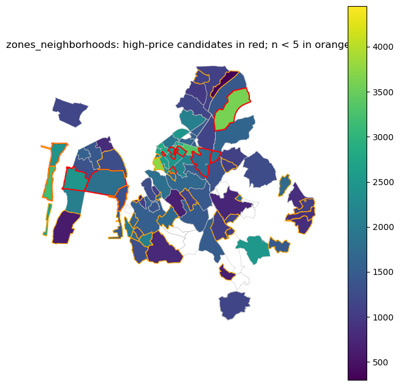
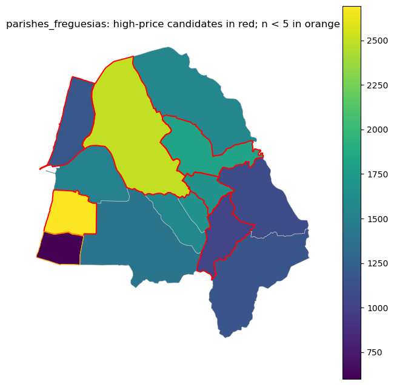
1.7.4 Robustness Interpretation: Plausible Explanations and Artefacts
Do not classify a high-price suburban zone or parish as an error without evidence. Plausible substantive explanations include larger dwellings, detached houses or villas, gardens or land, newer or better-preserved stock, coastal/Ria de Aveiro amenities, water access, low-density preferences, or tourism-driven demand. A high total price with moderate unit price often points to size or composition. A high unit price that persists after log transformation and outlier exclusion is more consistent with location, quality, amenity, or scarcity.
Possible artefacts include very small sample sizes, one or two listings driving a median, high fallback-assignment shares, mixed parish boundaries that combine urban and peri-urban contexts, temporal composition differences across listing years, and extreme listings that dominate a support. Internal heterogeneity matters: a parish can contain coastal, agricultural, urban, and suburban subareas at the same time. In that case, the parish median is a summary of mixed contexts, not proof that the whole parish is uniformly expensive.
The strongest interpretation is comparative and cautious: a high-price area is more credible when it has enough listings, the mean and median tell a consistent story, the pattern appears in unit price as well as total price, it persists after log transformation and outlier exclusion, fallback assignment is limited, and the area is not dominated by one or two observations.
1.8 6. Network-Based W: Road-Distance and Travel-Topology Interpretation
Euclidean distance treats space as open and frictionless. In Aveiro/Ilhavo, canals, bridges, lagoon edges, road hierarchy, and coastal access can make road-network proximity differ from straight-line proximity. A network-based W therefore represents relative space: which areas are near each other through the transport network, not only on the map.
This section attempts to use a cached OSMnx road graph at data/aveiro_ilhavo_drive.graphml. If no cached graph exists, the notebook does not fail. Set RUN_NETWORK_DOWNLOAD = True in the setup cells to attempt an OSMnx download when internet access is available.
▶ Show code
# Section 6 configuration and helper functionsNETWORK_DISTANCE_THRESHOLDS_M = [1500, 2500, 5000]NETWORK_SUPPORT_NAME ="zones_neighborhoods"if HAS_GEOSPATIAL_STACK and HAS_LIBPYSAL:def load_or_download_road_graph(study_gdf, cached_path=CACHED_NETWORK_PATH, allow_download=RUN_NETWORK_DOWNLOAD):ifnot (HAS_NETWORKX and HAS_OSMNX):returnNone, "networkx and osmnx are not installed."import osmnx as oxif cached_path.exists(): graph = ox.load_graphml(cached_path)return graph, f"Loaded cached graph from {cached_path}."ifnot allow_download:returnNone, (f"No cached graph found at {cached_path}. ""Set RUN_NETWORK_DOWNLOAD=True to attempt an OSMnx download." ) study_wgs84 = study_gdf.to_crs(GEOGRAPHIC_CRS) polygon = study_wgs84.geometry.union_all() ifhasattr(study_wgs84.geometry, "union_all") else study_wgs84.unary_union graph = ox.graph_from_polygon(polygon, network_type="drive", simplify=True) graph = ox.project_graph(graph, to_crs=PROJECTED_CRS)return graph, "Downloaded and projected OSMnx drive graph."def graph_to_projected(graph):import osmnx as ox graph_crs =str(graph.graph.get("crs", "")).upper()if PROJECTED_CRS.upper() notin graph_crs and"3763"notin graph_crs: graph = ox.project_graph(graph, to_crs=PROJECTED_CRS)return graphdef network_distance_matrix(graph, support_gdf):import networkx as nximport osmnx as ox support = support_gdf.to_crs(PROJECTED_CRS).copy() points = support.geometry.representative_point() nodes = ox.distance.nearest_nodes(graph, points.x.to_numpy(), points.y.to_numpy()) max_cutoff =max(NETWORK_DISTANCE_THRESHOLDS_M) lengths_by_node =dict(nx.all_pairs_dijkstra_path_length(graph, cutoff=max_cutoff, weight="length")) ids = support["support_id"].astype(str).tolist() records = []for sid_i, node_i inzip(ids, nodes): reachable = lengths_by_node.get(node_i, {})for sid_j, node_j inzip(ids, nodes):if sid_i == sid_j:continue distance = reachable.get(node_j, np.inf)if np.isfinite(distance): records.append({"from_id": sid_i, "to_id": sid_j, "network_distance_m": float(distance)})return pd.DataFrame(records), dict(zip(ids, nodes))def make_network_w(distance_df, ids, threshold_m): neighbours = {sid: [] for sid in ids}for row in distance_df.itertuples(index=False):if row.network_distance_m <= threshold_m: neighbours[str(row.from_id)].append(str(row.to_id)) w = weights.W(neighbours, id_order=ids, silence_warnings=True) w = set_row_standardized(w)return welse:print("Network helper setup skipped because geospatial packages or libpysal are unavailable.")
1.8.1 Network Distance Thresholds: Justification and Sensitivity
The analysis uses three road-network thresholds: 1,500 m, 2,500 m, and 5,000 m. These correspond to different spatial scales of housing-market interaction in the Aveiro-Ílhavo context:
Threshold
Spatial scale
Rationale
1,500 m
Walkable neighbourhood (~15–20 min on foot)
Captures immediate local spillovers; canal barriers matter most at this range
2,500 m
Short car trip (~5–10 min)
Broader neighbourhood; bridges become decisive connectivity points
Compare Moran’s I under the three thresholds in the table below (network Moran results).
If Moran’s I varies by < 0.05 across thresholds → result is threshold-robust; report a single conclusion.
If variation is 0.05 – 0.15 → moderate sensitivity; report the range and note which threshold changes it.
If variation is > 0.15 → result is threshold-dependent; do not report a single value. Diagnose why: at 5,000 m the road graph may connect zones separated by a canal bridge, adding new neighbours that smooth previously isolated clusters.
Common mistake: Selecting only the threshold that produces the most significant Moran’s I and reporting it as the result. If results change across thresholds, the spatial scale of the housing-market phenomenon is indeterminate at this resolution — report the sensitivity explicitly.
▶ Show code
# Build network W objects, if a graph is availablenetwork_distance_df =Nonenetwork_node_lookup =Nonenetwork_w_diagnostics = []if HAS_GEOSPATIAL_STACK and HAS_LIBPYSAL and aggregated_supports:if NETWORK_SUPPORT_NAME notin aggregated_supports:print(f"Network W skipped: {NETWORK_SUPPORT_NAME} support is not available.")else: network_support = support_for_weights(NETWORK_SUPPORT_NAME) road_graph, network_message = load_or_download_road_graph(network_support)print(network_message)if road_graph isnotNone:try: road_graph = graph_to_projected(road_graph) network_distance_df, network_node_lookup = network_distance_matrix(road_graph, network_support) ids = network_support["support_id"].astype(str).tolist()for threshold in NETWORK_DISTANCE_THRESHOLDS_M: w_name =f"zone_network_{threshold}m" w_net = make_network_w(network_distance_df, ids, threshold) concept =f"Zones are neighbours if their representative points are within {threshold:,} m along the drivable road network." pitfalls ="Depends on OSM completeness, centroid snapping, road hierarchy, bridges, one-way restrictions, and the selected threshold." w_registry[w_name] = {"w": w_net,"support": NETWORK_SUPPORT_NAME,"gdf": network_support,"family": "Network distance","conceptual_meaning": concept,"pitfalls": pitfalls, } network_w_diagnostics.append( diagnose_w(w_name, w_net, NETWORK_SUPPORT_NAME, "Network distance", concept, pitfalls, network_support) ) network_w_diagnostics_df = pd.DataFrame(network_w_diagnostics) show(network_w_diagnostics_df)exceptExceptionas exc:print(f"Network W skipped after graceful failure: {exc}")else:print("Network W not built; continuing with Euclidean W definitions.")else: network_w_diagnostics_df =Noneprint("Network W construction skipped.")
Downloaded and projected OSMnx drive graph.
W support family n \
0 zone_network_1500m zones_neighborhoods Network distance 131
1 zone_network_2500m zones_neighborhoods Network distance 131
2 zone_network_5000m zones_neighborhoods Network distance 131
nonzero_links islands n_islands \
0 575 [44, 55, 60, 74, 78, 85, 97, 98, 104, 105, 130] 11
1 1248 [] 0
2 4040 [] 0
n_components largest_component_size symmetric_neighbour_graph \
0 25 50 False
1 4 115 False
2 1 131 False
symmetric_weights row_standardized cardinality_min cardinality_q25 \
0 False True 0 2.0
1 False True 1 5.0
2 False True 4 17.5
cardinality_median cardinality_mean cardinality_q75 cardinality_max \
0 4.0 4.389313 6.0 14
1 9.0 9.526718 14.0 23
2 32.0 30.839695 43.0 69
conceptual_meaning \
0 Zones are neighbours if their representative p...
1 Zones are neighbours if their representative p...
2 Zones are neighbours if their representative p...
pitfalls
0 Depends on OSM completeness, centroid snapping...
1 Depends on OSM completeness, centroid snapping...
2 Depends on OSM completeness, centroid snapping...
▶ Show code
# Compare Euclidean kNN, Euclidean distance-band, and network Wif HAS_GEOSPATIAL_STACK and HAS_LIBPYSAL and w_registry: comparison_names = [ name for name in ["zone_knn","zone_distance_band","zone_network_1500m","zone_network_2500m","zone_network_5000m", ]if name in w_registry ] comparison_records = []for name in comparison_names: record = w_registry[name] w = record["w"] components = connected_components_from_w(w) card = cardinality_summary(w) comparison_records.append({"W": name,"family": record["family"],"n": w.n,"n_islands": len(w.islands),"n_components": len(components),"median_cardinality": card["median"],"mean_cardinality": card["mean"],"max_cardinality": card["max"],"row_standardized": str(w.transform).upper() =="R","conceptual_meaning": record["conceptual_meaning"],"pitfalls": record["pitfalls"], }) network_comparison_df = pd.DataFrame(comparison_records) show(network_comparison_df)else: network_comparison_df =Noneprint("Network comparison skipped.")
W family n n_islands n_components \
0 zone_knn Centroid kNN 131 0 1
1 zone_distance_band Distance band 131 0 1
2 zone_network_1500m Network distance 131 11 25
3 zone_network_2500m Network distance 131 0 4
4 zone_network_5000m Network distance 131 0 1
median_cardinality mean_cardinality max_cardinality row_standardized \
0 6.0 6.000000 6 True
1 19.0 19.633588 44 True
2 4.0 4.389313 14 True
3 9.0 9.526718 23 True
4 32.0 30.839695 69 True
conceptual_meaning \
0 Each support is connected to its 6 nearest rep...
1 Centroid/representative-point neighbours withi...
2 Zones are neighbours if their representative p...
3 Zones are neighbours if their representative p...
4 Zones are neighbours if their representative p...
pitfalls
0 Forces neighbours even across water, canals, o...
1 Threshold choice can drive results; Euclidean ...
2 Depends on OSM completeness, centroid snapping...
3 Depends on OSM completeness, centroid snapping...
4 Depends on OSM completeness, centroid snapping...
▶ Show code
# Map Euclidean and network neighbour graphsif HAS_GEOSPATIAL_STACK and HAS_LIBPYSAL and w_registry:for name in ["zone_knn", "zone_distance_band", "zone_network_1500m", "zone_network_2500m", "zone_network_5000m"]:if name in w_registry: plot_w_graph(w_registry[name]["w"], w_registry[name]["gdf"], f"Neighbour Graph Comparison: {name}")else:print("Network comparison maps skipped.")
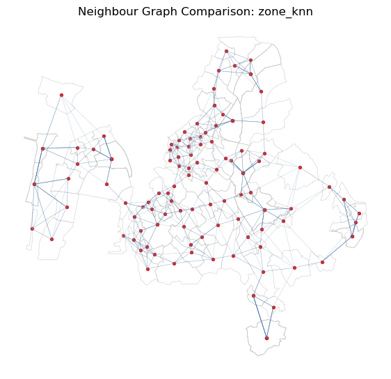
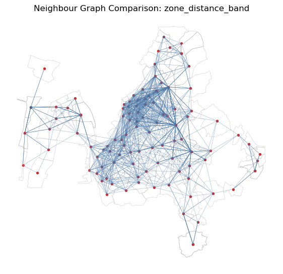
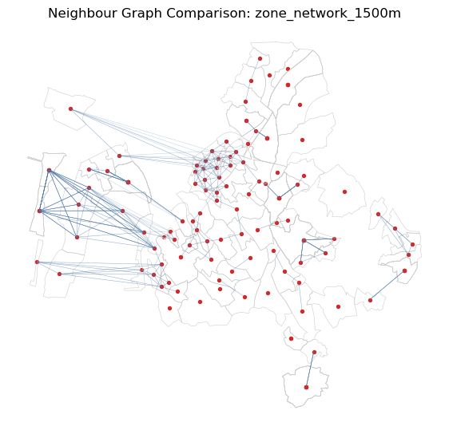
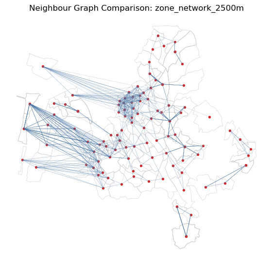
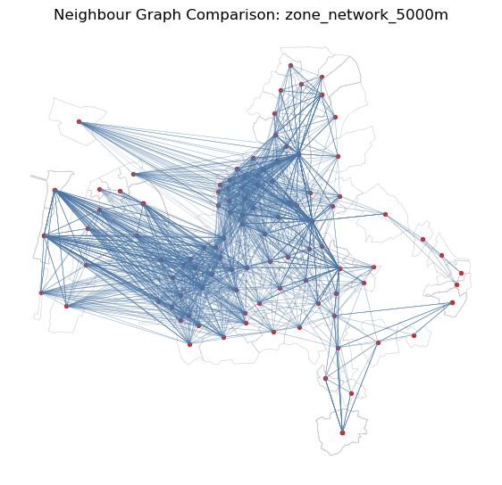
▶ Show code
# Optional network Moran and LISA diagnosticsnetwork_moran_df =Nonenetwork_lisa_summary_df =Noneif HAS_GEOSPATIAL_STACK and HAS_LIBPYSAL and HAS_ESDA and w_registry: network_names = [name for name in w_registry if name.startswith("zone_network_")]if network_names: moran_records = [] lisa_records = [] variable ="log_median_unit_price_eur_m2" quadrant_names = {1: "HH", 2: "LH", 3: "LL", 4: "HL"}for name in network_names: record = w_registry[name] gdf = analytical_gdf_for_w(record) valid = gdf[(gdf["n_listings"] >= MIN_LISTINGS) & gdf[variable].notna()].copy()iflen(valid) <5: moran_records.append({"W": name, "variable": variable, "n": len(valid), "Moran_I": np.nan, "p_sim": np.nan, "note": "too few supports"})continuetry: w_sub = subset_w(record["w"], valid["support_id"].astype(str).tolist()) y = valid.set_index("support_id").loc[w_sub.id_order, variable].to_numpy() moran = esda.Moran(y, w_sub, permutations=N_PERMUTATIONS) moran_records.append({"W": name, "variable": variable, "n": len(y), "Moran_I": moran.I, "p_sim": moran.p_sim, "note": ""}) lisa = esda.Moran_Local(y, w_sub, permutations=N_PERMUTATIONS) clusters = [ quadrant_names.get(q, "Other") if p <0.05else"Not significant"for q, p inzip(lisa.q, lisa.p_sim) ] counts = pd.Series(clusters).value_counts() lisa_records.append({"W": name,"variable": variable,"n": len(y),"HH": int(counts.get("HH", 0)),"LL": int(counts.get("LL", 0)),"HL": int(counts.get("HL", 0)),"LH": int(counts.get("LH", 0)),"not_significant": int(counts.get("Not significant", 0)), })exceptExceptionas exc: moran_records.append({"W": name, "variable": variable, "n": len(valid), "Moran_I": np.nan, "p_sim": np.nan, "note": str(exc)}) network_moran_df = pd.DataFrame(moran_records) network_lisa_summary_df = pd.DataFrame(lisa_records) show(network_moran_df) show(network_lisa_summary_df)else:print("No network W was built, so network Moran/LISA diagnostics are skipped.")else:print("Network Moran/LISA diagnostics skipped.")
('WARNING: ', '41', ' is an island (no neighbors)')
('WARNING: ', '43', ' is an island (no neighbors)')
('WARNING: ', '64', ' is an island (no neighbors)')
('WARNING: ', '65', ' is an island (no neighbors)')
('WARNING: ', '78', ' is an island (no neighbors)')
('WARNING: ', '28', ' is an island (no neighbors)')
('WARNING: ', '41', ' is an island (no neighbors)')
('WARNING: ', '43', ' is an island (no neighbors)')
('WARNING: ', '44', ' is an island (no neighbors)')
('WARNING: ', '55', ' is an island (no neighbors)')
('WARNING: ', '64', ' is an island (no neighbors)')
('WARNING: ', '65', ' is an island (no neighbors)')
('WARNING: ', '73', ' is an island (no neighbors)')
('WARNING: ', '74', ' is an island (no neighbors)')
('WARNING: ', '77', ' is an island (no neighbors)')
('WARNING: ', '78', ' is an island (no neighbors)')
('WARNING: ', '85', ' is an island (no neighbors)')
('WARNING: ', '97', ' is an island (no neighbors)')
('WARNING: ', '98', ' is an island (no neighbors)')
('WARNING: ', '99', ' is an island (no neighbors)')
('WARNING: ', '106', ' is an island (no neighbors)')
('WARNING: ', '110', ' is an island (no neighbors)')
('WARNING: ', '117', ' is an island (no neighbors)')
W variable n Moran_I p_sim note
0 zone_network_2500m log_median_unit_price_eur_m2 66 0.231201 0.003
1 zone_network_1500m log_median_unit_price_eur_m2 66 0.451931 0.001
2 zone_network_5000m log_median_unit_price_eur_m2 66 0.064990 0.074
W variable n HH LL HL LH \
0 zone_network_2500m log_median_unit_price_eur_m2 66 18 8 1 4
1 zone_network_1500m log_median_unit_price_eur_m2 66 13 15 3 3
2 zone_network_5000m log_median_unit_price_eur_m2 66 22 3 1 8
not_significant
0 35
1 32
2 32
1.8.2 Section 6 Interpretation and Caution
Network W is useful when road access is more substantively meaningful than straight-line distance. In Aveiro/Ilhavo, this may matter near canals, the Ria de Aveiro, bridges, coastal access routes, and separated urban/peri-urban areas. However, network W introduces its own assumptions: the chosen threshold, road-network type, OSM completeness, centroid snapping, and road hierarchy can all change the neighbour graph.
If network Moran/LISA results differ from Euclidean kNN or distance-band results, do not treat the network result as automatically superior. Interpret the difference as evidence that the spatial process is sensitive to how “nearby” is defined. A defensible conclusion should explain why road-network exposure is the relevant mechanism for the housing-market question.
1.9 7. Custom Hierarchical / House-to-House W Inherited from Zone Topology
Aggregation can hide within-zone variation. A point-level hierarchical W keeps listings as observations, but borrows neighbourhood structure from the zone topology. The core idea is:
listings in the same zone are neighbours;
listings in adjacent zones are neighbours;
optional distance or kNN pruning prevents very dense all-to-all blocks;
optional distance-decay weights allow nearer candidate listings to matter more.
This construction is defensible when zones approximate perceived local housing-market neighbourhoods. It is weak when zones are arbitrary, internally heterogeneous, or when many listings are geocoded to centroids.
▶ Show code
# Section 7 helper functions for hierarchical house-to-house Wif HAS_GEOSPATIAL_STACK and HAS_LIBPYSAL:def prepare_listing_points_for_house_w(points): required = [ZONE_ID, TARGET_PRICE, TARGET_UNIT_PRICE, "geometry"] missing = [col for col in required if col notin points.columns]if missing:raiseValueError(f"Missing required listing columns for house W: {missing}") out = points.dropna(subset=[ZONE_ID, "geometry"]).copy() out = out[out.geometry.notna()].copy() out["house_id"] = out.index.astype(str) out[ZONE_ID] = out[ZONE_ID].astype(str) out[TARGET_PRICE] = pd.to_numeric(out[TARGET_PRICE], errors="coerce") out[TARGET_UNIT_PRICE] = pd.to_numeric(out[TARGET_UNIT_PRICE], errors="coerce") out[f"log_{TARGET_PRICE}"] = np.where(out[TARGET_PRICE] >0, np.log(out[TARGET_PRICE]), np.nan) out[f"log_{TARGET_UNIT_PRICE}"] = np.where(out[TARGET_UNIT_PRICE] >0, np.log(out[TARGET_UNIT_PRICE]), np.nan)return outdef zone_neighbour_lookup(zone_w): lookup = {}for zone_id in zone_w.id_order: lookup[str(zone_id)] = {str(zone_id), *[str(n) for n in zone_w.neighbors.get(zone_id, [])]}return lookupdef candidate_house_lookup(points, zone_candidates): zone_to_house_ids = points.groupby(ZONE_ID)["house_id"].apply(list).to_dict() candidate_lookup = {}for zone_id, house_ids in zone_to_house_ids.items(): candidate_zones = zone_candidates.get(str(zone_id), {str(zone_id)}) candidate_ids = []for candidate_zone in candidate_zones: candidate_ids.extend(zone_to_house_ids.get(str(candidate_zone), []))for house_id in house_ids: candidate_lookup[house_id] = [candidate for candidate in candidate_ids if candidate != house_id]return candidate_lookupdef point_coordinate_lookup(points): coords = points.set_index("house_id").geometryreturn {house_id: (geom.x, geom.y) for house_id, geom in coords.items()}def distance_between(coord_a, coord_b):return math.sqrt((coord_a[0] - coord_b[0]) **2+ (coord_a[1] - coord_b[1]) **2)def build_hierarchical_w(points, zone_w, mode="binary", distance_threshold_m=None, k=None, decay_power=1.0): zone_candidates = zone_neighbour_lookup(zone_w) base_candidates = candidate_house_lookup(points, zone_candidates) coords = point_coordinate_lookup(points) ids = points["house_id"].tolist() neighbours = {house_id: [] for house_id in ids} weight_values = {house_id: [] for house_id in ids}for house_id in ids: candidates = base_candidates.get(house_id, [])if mode in {"distance_pruned", "knn_pruned", "distance_decay"}: candidate_distances = [ (candidate, distance_between(coords[house_id], coords[candidate]))for candidate in candidatesif candidate in coords and house_id in coords ]else: candidate_distances = [(candidate, 1.0) for candidate in candidates]if mode =="distance_pruned"and distance_threshold_m isnotNone: candidate_distances = [(candidate, dist) for candidate, dist in candidate_distances if dist <= distance_threshold_m]if mode =="knn_pruned"and k isnotNone: candidate_distances =sorted(candidate_distances, key=lambda item: item[1])[:k]if mode =="distance_decay":if distance_threshold_m isnotNone: candidate_distances = [(candidate, dist) for candidate, dist in candidate_distances if dist <= distance_threshold_m] neighbours[house_id] = [candidate for candidate, _dist in candidate_distances] weight_values[house_id] = [1.0/max(dist, 1.0) ** decay_power for _candidate, dist in candidate_distances]else: neighbours[house_id] = [candidate for candidate, _dist in candidate_distances] weight_values[house_id] = [1.0for _candidate, _dist in candidate_distances] w = weights.W(neighbours, weights=weight_values, id_order=ids, silence_warnings=True) w = set_row_standardized(w)return wdef house_w_diagnostics(name, w, conceptual_meaning, pitfalls): components = connected_components_from_w(w) card = cardinality_summary(w) approx_nonzero =int(sum(w.cardinalities.values()))return {"W": name,"n_listings": w.n,"nonzero_links": approx_nonzero,"approx_sparse_memory_mb": approx_nonzero *16/1_000_000,"n_islands": len(w.islands),"n_components": len(components),"largest_component_size": max(len(c) for c in components) if components else0,"row_standardized": str(w.transform).upper() =="R","symmetric_neighbour_graph": is_neighbor_symmetric(w),"symmetric_weights": is_weight_symmetric(w),"cardinality_min": card["min"],"cardinality_median": card["median"],"cardinality_mean": card["mean"],"cardinality_max": card["max"],"conceptual_meaning": conceptual_meaning,"pitfalls": pitfalls, }else:print("House-to-house W helpers skipped because geospatial packages or libpysal are unavailable.")
▶ Show code
# Build hierarchical house-to-house W alternativeshouse_w_registry = {}house_w_diagnostics_records = []if HAS_GEOSPATIAL_STACK and HAS_LIBPYSAL and"zone_queen"in w_registry: house_points = prepare_listing_points_for_house_w(listings_metric) zone_queen_w = w_registry["zone_queen"]["w"] house_specs = [ {"name": "house_hier_binary","mode": "binary","concept": "Listings are neighbours when they are in the same zone or Queen-adjacent zones.","pitfalls": "Can create dense blocks and artificial dependence when zones contain many heterogeneous listings.", }, {"name": "house_hier_distance_1000m","mode": "distance_pruned","distance_threshold_m": 1000,"concept": "Listings must be in the same/adjacent zones and within 1,000 m.","pitfalls": "Threshold choice is arbitrary and still uses Euclidean point distance.", }, {"name": "house_hier_knn10","mode": "knn_pruned","k": 10,"concept": "Within same/adjacent-zone candidate sets, retain the 10 nearest listings.","pitfalls": "Forces local neighbours even for isolated listings and may hide uneven listing density.", }, {"name": "house_hier_decay_1000m","mode": "distance_decay","distance_threshold_m": 1000,"decay_power": 1.0,"concept": "Same/adjacent-zone candidate listings within 1,000 m receive inverse-distance weights.","pitfalls": "Sensitive to coordinate artefacts, duplicate coordinates, and distance-decay specification.", }, ]for spec in house_specs:try: w_house = build_hierarchical_w( house_points, zone_queen_w, mode=spec["mode"], distance_threshold_m=spec.get("distance_threshold_m"), k=spec.get("k"), decay_power=spec.get("decay_power", 1.0), ) house_w_registry[spec["name"]] = {"w": w_house,"points": house_points,"conceptual_meaning": spec["concept"],"pitfalls": spec["pitfalls"], } house_w_diagnostics_records.append(house_w_diagnostics(spec["name"], w_house, spec["concept"], spec["pitfalls"]))exceptExceptionas exc: warnings.warn(f"Could not build {spec['name']}: {exc}") house_w_diagnostics_df = pd.DataFrame(house_w_diagnostics_records) show(house_w_diagnostics_df)else: house_points =None house_w_diagnostics_df =Noneprint("Hierarchical house-to-house W construction skipped. Requires zone_queen W and libpysal.")
W n_listings nonzero_links \
0 house_hier_binary 1184 143432
1 house_hier_distance_1000m 1184 92482
2 house_hier_knn10 1184 11728
3 house_hier_decay_1000m 1184 92482
approx_sparse_memory_mb n_islands n_components largest_component_size \
0 2.294912 1 9 917
1 1.479712 8 19 912
2 0.187648 1 10 917
3 1.479712 8 19 912
row_standardized symmetric_neighbour_graph symmetric_weights \
0 True True False
1 True True False
2 True False False
3 True True False
cardinality_min cardinality_median cardinality_mean cardinality_max \
0 0 114.0 121.141892 286
1 0 55.0 78.109797 279
2 0 10.0 9.905405 10
3 0 55.0 78.109797 279
conceptual_meaning \
0 Listings are neighbours when they are in the s...
1 Listings must be in the same/adjacent zones an...
2 Within same/adjacent-zone candidate sets, reta...
3 Same/adjacent-zone candidate listings within 1...
pitfalls
0 Can create dense blocks and artificial depende...
1 Threshold choice is arbitrary and still uses E...
2 Forces local neighbours even for isolated list...
3 Sensitive to coordinate artefacts, duplicate c...
▶ Show code
# Plot cardinality distributions for house-level W alternativesif HAS_GEOSPATIAL_STACK and HAS_LIBPYSAL and house_w_registry: ncols =2 nrows = math.ceil(len(house_w_registry) / ncols) fig, axes = plt.subplots(nrows, ncols, figsize=(12, 3.8* nrows)) axes = np.atleast_1d(axes).ravel()for ax, (name, record) inzip(axes, house_w_registry.items()): vals = pd.Series(record["w"].cardinalities) vals.plot(kind="hist", bins=30, ax=ax, color="#4c78a8", alpha=0.85) ax.set_title(name) ax.set_xlabel("Number of listing neighbours")for ax in axes[len(house_w_registry):]: ax.set_visible(False) fig.suptitle("Hierarchical House-to-House W Cardinality Distributions") fig.tight_layout() plt.show()# --- Density-comparison bar chart: mean ± 1 std cardinality per specification --- hw_names =list(house_w_registry.keys()) hw_means = [pd.Series(house_w_registry[n]["w"].cardinalities).mean() for n in hw_names] hw_stds = [pd.Series(house_w_registry[n]["w"].cardinalities).std() for n in hw_names] fig2, ax2 = plt.subplots(figsize=(max(5, len(hw_names) *1.5), 4)) ax2.bar(range(len(hw_names)), hw_means, yerr=hw_stds, capsize=5, color="#4c78a8", alpha=0.85, error_kw={"ecolor": "#d62728", "lw": 2}) ax2.set_xticks(range(len(hw_names))) ax2.set_xticklabels(hw_names, rotation=30, ha="right") ax2.set_ylabel("Mean listing neighbours (\u00b1 1 std)") ax2.set_title("House W Density Comparison: Mean Cardinality per Specification\n""Binary W is typically much denser than distance-pruned or kNN alternatives" ) ax2.grid(axis="y", alpha=0.4) fig2.tight_layout() plt.show()# Numerical summary tableprint("Cardinality summary per house W specification:") hw_summary = []for n in hw_names: vals = pd.Series(house_w_registry[n]["w"].cardinalities) hw_summary.append({"specification": n,"mean_neighbours": round(float(vals.mean()), 1),"std_neighbours": round(float(vals.std()), 1),"min_neighbours": int(vals.min()),"max_neighbours": int(vals.max()),"density_vs_binary_%": (round((vals.mean() / hw_means[0]) *100, 1) if hw_means[0] elseNone ), }) show(pd.DataFrame(hw_summary))else:print("House W cardinality plots skipped.")
# Map a sample of house-to-house links to keep the plot readableif HAS_GEOSPATIAL_STACK and HAS_LIBPYSAL and house_w_registry:def plot_house_w_sample(name, record, max_points=150, max_links=800): points = record["points"].copy() w = record["w"] sample_ids = points["house_id"].head(max_points).tolist() sample_set =set(sample_ids) point_lookup = points.set_index("house_id").geometry.to_dict() fig, ax = plt.subplots(figsize=(8, 8)) zones_metric.boundary.plot(ax=ax, color="0.80", linewidth=0.35) link_count =0for i in sample_ids: pi = point_lookup.get(i)if pi isNone:continuefor j in w.neighbors.get(i, []):if j notin sample_set:continue pj = point_lookup.get(j)if pj isNone:continue ax.plot([pi.x, pj.x], [pi.y, pj.y], color="#4c78a8", linewidth=0.25, alpha=0.25) link_count +=1if link_count >= max_links:breakif link_count >= max_links:break points[points["house_id"].isin(sample_set)].plot(ax=ax, markersize=10, color="#d62728", alpha=0.75) ax.set_title(f"Sample Hierarchical Listing Links: {name}\nfirst {len(sample_ids)} listings; max {max_links} links") ax.set_axis_off() plt.show()for name in ["house_hier_binary", "house_hier_distance_1000m", "house_hier_knn10", "house_hier_decay_1000m"]:if name in house_w_registry: plot_house_w_sample(name, house_w_registry[name])else:print("House W sample maps skipped.")
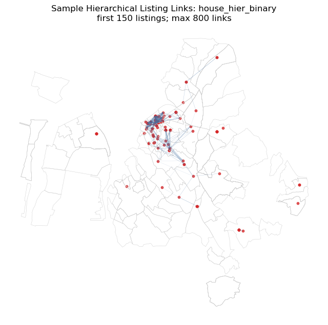
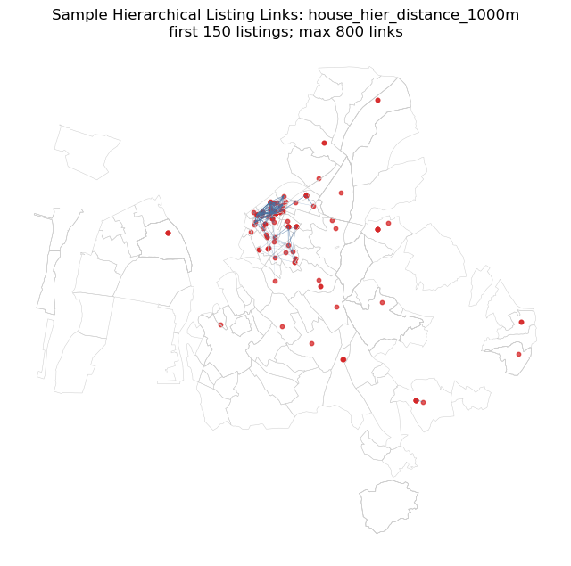
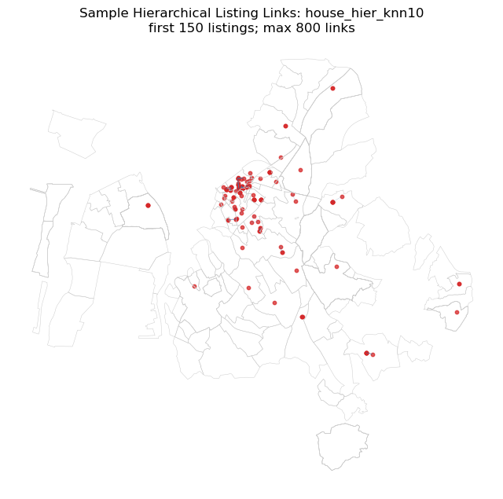
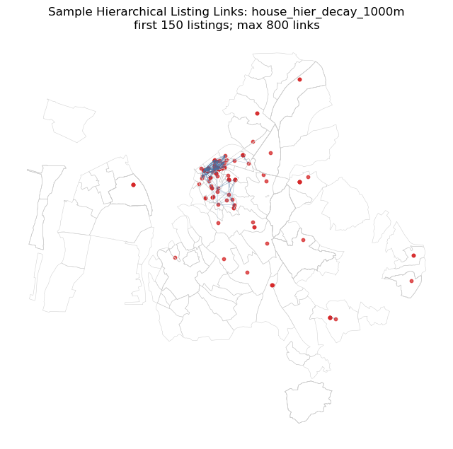
▶ Show code
# Moran diagnostics for listing-level log price and log unit price under house Whouse_moran_df =Noneif HAS_GEOSPATIAL_STACK and HAS_LIBPYSAL and HAS_ESDA and house_w_registry: records = [] variables = [f"log_{TARGET_PRICE}", f"log_{TARGET_UNIT_PRICE}"]for w_name, record in house_w_registry.items(): points = record["points"].copy()for variable in variables: valid = points[points[variable].notna()].copy()iflen(valid) <10: records.append({"W": w_name, "variable": variable, "n": len(valid), "Moran_I": np.nan, "p_sim": np.nan, "note": "too few listings"})continuetry: w_sub = subset_w(record["w"], valid["house_id"].astype(str).tolist()) y = valid.set_index("house_id").loc[w_sub.id_order, variable].to_numpy() moran = esda.Moran(y, w_sub, permutations=N_PERMUTATIONS) records.append({"W": w_name, "variable": variable, "n": len(y), "Moran_I": moran.I, "p_sim": moran.p_sim, "note": ""})exceptExceptionas exc: records.append({"W": w_name, "variable": variable, "n": len(valid), "Moran_I": np.nan, "p_sim": np.nan, "note": str(exc)}) house_moran_df = pd.DataFrame(records) show(house_moran_df)else:print("House-level Moran diagnostics skipped.")
('WARNING: ', '1124', ' is an island (no neighbors)')
('WARNING: ', '1124', ' is an island (no neighbors)')
('WARNING: ', '399', ' is an island (no neighbors)')
('WARNING: ', '438', ' is an island (no neighbors)')
('WARNING: ', '712', ' is an island (no neighbors)')
('WARNING: ', '754', ' is an island (no neighbors)')
('WARNING: ', '907', ' is an island (no neighbors)')
('WARNING: ', '911', ' is an island (no neighbors)')
('WARNING: ', '991', ' is an island (no neighbors)')
('WARNING: ', '1124', ' is an island (no neighbors)')
('WARNING: ', '399', ' is an island (no neighbors)')
('WARNING: ', '438', ' is an island (no neighbors)')
('WARNING: ', '712', ' is an island (no neighbors)')
('WARNING: ', '754', ' is an island (no neighbors)')
('WARNING: ', '907', ' is an island (no neighbors)')
('WARNING: ', '911', ' is an island (no neighbors)')
('WARNING: ', '991', ' is an island (no neighbors)')
('WARNING: ', '1124', ' is an island (no neighbors)')
('WARNING: ', '1124', ' is an island (no neighbors)')
('WARNING: ', '1124', ' is an island (no neighbors)')
('WARNING: ', '399', ' is an island (no neighbors)')
('WARNING: ', '438', ' is an island (no neighbors)')
('WARNING: ', '712', ' is an island (no neighbors)')
('WARNING: ', '754', ' is an island (no neighbors)')
('WARNING: ', '907', ' is an island (no neighbors)')
('WARNING: ', '911', ' is an island (no neighbors)')
('WARNING: ', '991', ' is an island (no neighbors)')
('WARNING: ', '1124', ' is an island (no neighbors)')
('WARNING: ', '399', ' is an island (no neighbors)')
('WARNING: ', '438', ' is an island (no neighbors)')
('WARNING: ', '712', ' is an island (no neighbors)')
('WARNING: ', '754', ' is an island (no neighbors)')
('WARNING: ', '907', ' is an island (no neighbors)')
('WARNING: ', '911', ' is an island (no neighbors)')
('WARNING: ', '991', ' is an island (no neighbors)')
('WARNING: ', '1124', ' is an island (no neighbors)')
W variable n Moran_I p_sim \
0 house_hier_binary log_price_eur 1184 0.108799 0.001
1 house_hier_binary log_unit_price_eur_m2 1184 0.289002 0.001
2 house_hier_distance_1000m log_price_eur 1184 0.162135 0.001
3 house_hier_distance_1000m log_unit_price_eur_m2 1184 0.341649 0.001
4 house_hier_knn10 log_price_eur 1184 0.214581 0.001
5 house_hier_knn10 log_unit_price_eur_m2 1184 0.390373 0.001
6 house_hier_decay_1000m log_price_eur 1184 0.293129 0.001
7 house_hier_decay_1000m log_unit_price_eur_m2 1184 0.458440 0.001
note
0
1
2
3
4
5
6
7
▶ Show code
# Compare hierarchical house W with pure point kNN Wpoint_knn_comparison_df =Noneif HAS_GEOSPATIAL_STACK and HAS_LIBPYSAL and house_points isnotNoneandlen(house_points) >1:try: point_knn = weights.KNN.from_dataframe(house_points, k=10, ids=house_points["house_id"].tolist()) point_knn = set_row_standardized(point_knn) concept ="Pure point kNN connects each listing to its 10 nearest listing points, ignoring zone topology." pitfalls ="Very sensitive to coordinate artefacts, duplicate coordinates, and uneven listing density." point_knn_diag = house_w_diagnostics("house_point_knn10", point_knn, concept, pitfalls) comparison = house_w_diagnostics_records + [point_knn_diag] point_knn_comparison_df = pd.DataFrame(comparison) show(point_knn_comparison_df)exceptExceptionas exc:print(f"Point kNN comparison skipped after graceful failure: {exc}")else:print("Point kNN comparison skipped.")
W n_listings nonzero_links \
0 house_hier_binary 1184 143432
1 house_hier_distance_1000m 1184 92482
2 house_hier_knn10 1184 11728
3 house_hier_decay_1000m 1184 92482
4 house_point_knn10 1184 11840
approx_sparse_memory_mb n_islands n_components largest_component_size \
0 2.294912 1 9 917
1 1.479712 8 19 912
2 0.187648 1 10 917
3 1.479712 8 19 912
4 0.189440 0 3 1125
row_standardized symmetric_neighbour_graph symmetric_weights \
0 True True False
1 True True False
2 True False False
3 True True False
4 True False False
cardinality_min cardinality_median cardinality_mean cardinality_max \
0 0 114.0 121.141892 286
1 0 55.0 78.109797 279
2 0 10.0 9.905405 10
3 0 55.0 78.109797 279
4 10 10.0 10.000000 10
conceptual_meaning \
0 Listings are neighbours when they are in the s...
1 Listings must be in the same/adjacent zones an...
2 Within same/adjacent-zone candidate sets, reta...
3 Same/adjacent-zone candidate listings within 1...
4 Pure point kNN connects each listing to its 10...
pitfalls
0 Can create dense blocks and artificial depende...
1 Threshold choice is arbitrary and still uses E...
2 Forces local neighbours even for isolated list...
3 Sensitive to coordinate artefacts, duplicate c...
4 Very sensitive to coordinate artefacts, duplic...
▶ Show code
point_knn_comparison_df
W
n_listings
nonzero_links
approx_sparse_memory_mb
n_islands
n_components
largest_component_size
row_standardized
symmetric_neighbour_graph
symmetric_weights
cardinality_min
cardinality_median
cardinality_mean
cardinality_max
conceptual_meaning
pitfalls
0
house_hier_binary
1184
143432
2.294912
1
9
917
True
True
False
0
114.0
121.141892
286
Listings are neighbours when they are in the s...
Can create dense blocks and artificial depende...
1
house_hier_distance_1000m
1184
92482
1.479712
8
19
912
True
True
False
0
55.0
78.109797
279
Listings must be in the same/adjacent zones an...
Threshold choice is arbitrary and still uses E...
2
house_hier_knn10
1184
11728
0.187648
1
10
917
True
False
False
0
10.0
9.905405
10
Within same/adjacent-zone candidate sets, reta...
Forces local neighbours even for isolated list...
3
house_hier_decay_1000m
1184
92482
1.479712
8
19
912
True
True
False
0
55.0
78.109797
279
Same/adjacent-zone candidate listings within 1...
Sensitive to coordinate artefacts, duplicate c...
4
house_point_knn10
1184
11840
0.189440
0
3
1125
True
False
False
10
10.0
10.000000
10
Pure point kNN connects each listing to its 10...
Very sensitive to coordinate artefacts, duplic...
1.9.1 Section 7 Interpretation and Caution
The hierarchical house-to-house W preserves listing-level variation while imposing a neighbourhood structure from zones. It is useful when listings in the same or adjacent zones plausibly share local-market context. The binary version is easy to explain but can be too dense, especially in zones with many listings. Distance pruning and kNN pruning control density but introduce their own tuning choices. Distance decay is more nuanced, but it becomes sensitive to coordinate precision and duplicate coordinates.
This W is weakest when zones are arbitrary, internally heterogeneous, or when many listings use centroid-like coordinates. It should therefore be compared with pure point kNN and aggregated-zone results. If listing-level Moran statistics are strong only under one hierarchical specification, the conclusion is specification-dependent rather than robust evidence of a housing-market spillover process.